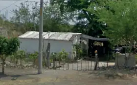
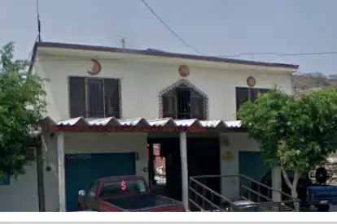
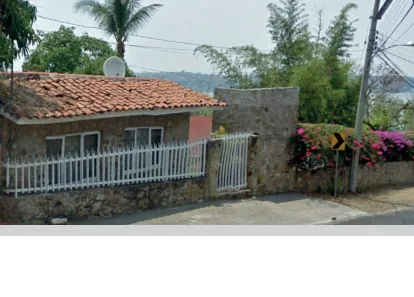
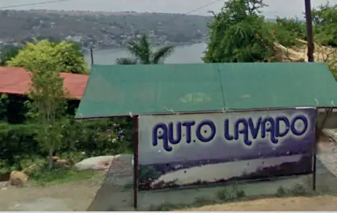
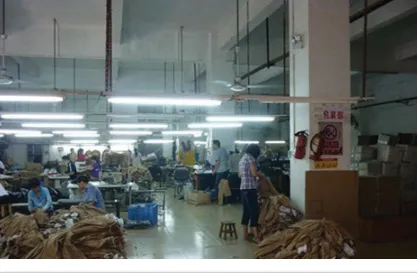
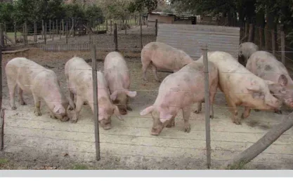
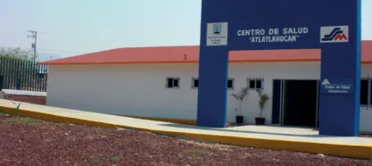

Manual de Agua Potable, Alcantarillado y Saneamiento
Libro 1
Integración de un Organismo Operador
Comisión Nacional del Agua
www.conagua.gob.mx
Datos de la edición (ISBN, derechos y reproducción)
Manual de Agua Potable, Alcantarillado y Saneamiento
Integración de un Organismo Operador
ISBN: 978-607-8246-82-3
D.R. © Secretaría de Medio Ambiente y Recursos Naturales
Bulevar Adolfo Ruiz Cortines No. 4209 Col. Jardines en la Montaña
C.P. 14210, Tlalpan, México, D.F.
Comisión Nacional del Agua
Insurgentes Sur No. 2416 Col. Copilco El Bajo
C.P. 04340, Coyoacán, México, D.F.
Tel. (55) 5174•4000
Subdirección General de Agua Potable, Drenaje y Saneamiento
Impreso y hecho en México
Distribución gratuita. Prohibida su venta.
Queda prohibido su uso para fines distintos al desarrollo social.
Se autoriza la reproducción sin alteraciones del material contenido en esta obra, sin fines de lucro y citando la fuente.
Nota sobre esta transcripción
Transcripción completa del Libro 1, Integración de un Organismo Operador, del Manual de Agua Potable, Alcantarillado y Saneamiento (MAPAS) de la Comisión Nacional del Agua (Conagua), a partir del archivo PDF Libro01.pdf (102 páginas, diciembre de 2015). Se transcribe el texto íntegro, en orden, con todos los capítulos y secciones, las 18 tablas con todos sus valores, las fórmulas (ecuaciones 2.1 a 2.24) en forma legible y las 42 ilustraciones con su número, título y descripción de lo que muestran. No se resume ni se acorta el contenido.
Las ilustraciones son imágenes en el original (fotografías, mapas, esquemas y organigramas); en esta transcripción no se reproducen las imágenes, sino su pie (número y título) y una descripción fiel de lo que muestran, basada en el pie y en las etiquetas legibles del propio original. Cuando una ilustración es un diagrama, una gráfica o un organigrama, sus rótulos se reúnen al pie de la ilustración (apartado «Rótulos»), en el orden en que se extraen del PDF; en los organigramas con texto girado la extracción resulta fragmentaria y así se deja constancia.
Las tablas que en el original son formatos en blanco para llenar en campo se reproducen como tablas HTML con sus encabezados y filas, y sus celdas de registro en blanco. Las celdas que están en blanco en el original se marcan «—» y se advierte en cada caso; ningún valor fue inventado ni completado.
Se corrigieron únicamente defectos evidentes de la extracción del texto del PDF (letras espaciadas en algunos encabezados, palabras partidas por guion de fin de línea y errores de lectura como «Vqlumen» por «Volumen»); las erratas propias del original (por ejemplo, en la Bibliografía) se conservan tal como aparecen. Las páginas en blanco del original (versos sin texto: pp. VI, VIII, X, 12, 40 y 82, y la página final) se señalan en su lugar.
Las marcas «p. N» señalan dónde empieza cada página del libro impreso (al pasar el cursor se ve también la página del PDF), para poder cotejar la transcripción con el original. Se pueden ocultar con el botón «Páginas» de la barra de lectura.
Edición para lectura continua: los renglones del PDF se unieron en párrafos (quitando el guion de fin de renglón), las ilustraciones y tablas que cortaban una frase se colocan al terminar el párrafo, los rótulos de los esquemas van dentro de su ilustración, y el índice y las referencias a ilustraciones, tablas y ecuaciones son enlaces. Las palabras son las mismas; solo cambió su acomodo. Además, se devolvieron a su párrafo cinco fragmentos de texto que la extracción había metido en el pie de una ilustración, y se quitaron una repetición del «Donde:» de la ecuación 2.2 y un signo «$» pegado a una palabra.
Presentación
Uno de los grandes desafíos hídricos que enfrentamos a nivel global es dotar de los servicios de agua potable, alcantarillado y saneamiento a la población, debido, por un lado, al crecimiento demográfico acelerado y por otro, a las dificultades técnicas, cada vez mayores, que conlleva hacerlo.
Contar con estos servicios en el hogar es un factor determinante en la calidad de vida y desarrollo integral de las familias. En México, la población beneficiada ha venido creciendo los últimos años; sin embargo, mientras más nos acercamos a la cobertura universal, la tarea se vuelve más compleja.
Por ello, para responder a las nuevas necesidades hídricas, la administración del Presidente de la República, Enrique Peña Nieto, está impulsando una transformación integral del sector, y como parte fundamental de esta estrategia, el fortalecimiento de los organismos operadores y prestadores de los servicios de agua potable, drenaje y saneamiento.
En este sentido, publicamos este manual: una guía técnica especializada, que contiene los más recientes avances tecnológicos en obras hidráulicas y normas de calidad, con el fin de desarrollar infraestructura más eficiente, segura y sustentable, así como formar recursos humanos más capacitados y preparados.
Estamos seguros de que será de gran apoyo para orientar el quehacer cotidiano de los técnicos, especialistas y tomadores de decisiones, proporcionándoles criterios para generar ciclos virtuosos de gestión, disminuir los costos de operación, impulsar el intercambio de volúmenes de agua de primer uso por tratada en los procesos que así lo permitan, y realizar en general, un mejor aprovechamiento de las aguas superficiales y subterráneas del país, considerando las necesidades de nueva infraestructura y el cuidado y mantenimiento de la existente.
El Gobierno de la República tiene el firme compromiso de sentar las bases de una cultura de la gestión integral del agua. Nuestros retos son grandes, pero más grande debe ser nuestra capacidad transformadora para contribuir desde el sector hídrico a Mover a México.
Director General de la Comisión Nacional del Agua
Objetivo general
El Manual de Agua Potable, Alcantarillado y Saneamiento (MAPAS) está dirigido a quienes diseñan, construyen, operan y administran los sistemas de agua potable, alcantarillado y saneamiento del país; busca ser una referencia sobre los criterios, procedimientos, normas, índices, parámetros y casos de éxito que la Comisión Nacional del Agua (Conagua), en su carácter de entidad normativa federal en materia de agua, considera recomendable utilizar, a efecto de homologarlos, para que el desarrollo, operación y administración de los sistemas se encaminen a elevar y mantener la eficiencia y la calidad de los servicios a la población.
Este trabajo favorece y orienta la toma de decisiones por parte de autoridades, profesionales, administradores y técnicos de los organismos operadores de agua de la República Mexicana y la labor de los centros de enseñanza.
Introducción a la integración de un organismo operador
En este libro se brinda la metodología y consideraciones iniciales para definir la estructura básica de un organismo operador de nueva creación, a cargo de una junta o comité local, en una pequeña comunidad; un organismo a cargo de los ayuntamientos; un organismo intermunicipal o a cargo de gobiernos estatales. Asimismo, se contemplarán las posibles transformaciones de los organismos operadores, en busca de esquemas que les permitan atender mejor las demandas presentes y futuras e incrementar sus eficiencias, para elevar su viabilidad técnica, social, financiera y ambiental.
Se describen los cambios y requerimientos que la integración (o transformación) de un organismo operador puede conllevar, como el jurídico, el normativo, el organizacional y el administrativo, el tecnológico, el financiero, el social y otros, para lo cual es necesario considerar las características socioeconómicas de la población y la demanda por atender. Además, puede implicar tanto la liquidación como la contratación de personal, inversiones en nuevas instalaciones y en nueva infraestructura, venta de bienes muebles e inmuebles, nuevo equipamiento y sistemas, actualización de funciones, nuevos procedimientos de trabajo (comerciales y operacionales), estándares de servicio más altos (cantidad y calidad del agua, continuidad y confiabilidad del servicio, presiones adecuadas), etcétera, cuya determinación, dimensionamiento, costos, fuentes de financiamiento y otros factores hacen necesaria la aplicación de un diagnóstico, ya sea integral o simplificado, o específico de un área (comercial u operacional).
1. Introducción
1.1 Antecedentes
Los primeros organismos operadores de agua del país surgieron debido al crecimiento urbano de los centros de población, los cuales empezaron a demandar la atención de los servicios básicos. En 1948, la Secretaría de Recursos Hidráulicos (SRH) fue la encargada de administrar los sistemas de agua potable y de alcantarillado, directamente o en la forma que dicha dependencia determinara en cada caso. Con ellos surgió el Reglamento de las Juntas Federales de Agua Potable (publicado en el Diario Oficial de la Federación el 5 de marzo de 1949), con el cual se definió la estructura de organización, las funciones y demás normas a que se sujetaba la operación de dichos organismos. Desde un inicio se consideró que los servicios de agua potable y alcantarillado eran de tipo municipal y que la Federación intervenía como apoyo técnico y económico para el municipio. Se estableció que las inversiones eran recuperables y el gobierno federal se hacía cargo de la operación de los sistemas de agua potable y alcantarillado hasta que, a través de las tarifas por el servicio, se recuperara la inversión. Bajo este enfoque se constituyeron organismos operadores en cuyo órgano de gobierno existía siempre la representación de los ayuntamientos, en reconocimiento a su responsabilidad original.
1.1.1 Organismos operadores federales
En gran parte del territorio nacional, la Federación invirtió en obras de agua potable y alcantarillado. Los organismos operadores que se crearon tenían diferentes matices políticos, pero en general se clasificaban en tres tipos:
- Juntas federales de agua potable y alcantarillado. Se formaron en poblaciones grandes que pudieron concertar la participación de las autoridades locales y de los propios usuarios. Tenían un Consejo de Administración formado por un Presidente designado por la autoridad federales o en acuerdo de las autoridades locales; un Vocal Secretario cuya designación correspondía al ayuntamiento y que se consideraba su representante; un Primer Vocal que era el representante de la Federación y normalmente en quien recaía la verdadera autoridad del organismo; un Segundo Vocal representante del gobierno estatal; un Vocal representante de los usuarios del sistema; y diversos vocales adicionales, representantes de dependencias federales ligadas al servicio, como Salubridad
- Comités municipales de agua potable y alcantarillado. Se formaron en poblaciones menores. En ellos no se consideraba un representante del gobierno estatal y se ejercía menos control debido a su tamaño
- Administraciones directas de la Federación. En este tipo de organismos no existía un consejo ni participación local. Se implementaron cuando las condiciones políticas no favorecían la integración de una junta local. La Federación era la única autoridad responsable
La administración de los organismos operadores se realizaba de la siguiente manera:
La información se concentraba en las oficinas centrales de la SRH; los recursos financieros generados servían para la operación y administración local y se ejercían mediante un presupuesto anual autorizado por la misma SRH; los remanentes, en caso de existir, se concentraban a nivel central en el Fondo de Operación en la Secretaría de Hacienda y Crédito Público (SHCP), para la amortización de la inversión federal recuperable, con el objetivo específico de ser reinvertidos en los propios sistemas para rehabilitación y ampliación de las redes.
Por otra parte, las tarifas por los servicios prestados eran autorizadas por la SRH en procesos de negociación con las autoridades locales. Este proceso ocasionó un gran rezago financiero que se contrarrestaba con inversiones nuevas de la Federación, incrementando la deuda de los municipios y consolidando la autoridad de la SRH sobre los sistemas (Rodríguez, 2008).
A pesar de todo, la creciente necesidad de inversiones mayores en el subsector, generada por el crecimiento urbano acelerado, la conciencia de tener que hacer inversiones repetidas en las mismas poblaciones, lo mismo que el desgaste del sistema financiero nacional de endeudamiento creciente propició en los años setenta un importante impulso hacia la promoción de la eficiencia. Entonces comenzó un nuevo enfoque hacia la necesidad de que los organismos operadores se convirtieran en verdaderas empresas de servicio con autosuficiencia técnica y financiera.
1.1.2 Organismos operadores estatales
En 1976 desapareció la SRH y sus funciones fueron repartidas entre diferentes dependencias, como la Secretaría de Agricultura y Recursos Hidráulicos (SARH) y la Secretaría de Asentamientos Humanos y Obras Públicas (SAHOP). Así se rompió la unidad del sector.
Los aspectos de agua potable y alcantarillado quedaron en la SAHOP, mientras que la construcción de los acueductos, incluidos los de agua potable, fueron tarea de la SARH.
En 1980 el gobierno federal entregó a los gobiernos estatales o municipales todos los sistemas de agua potable y alcantarillado que administraba y operaba directamente o a través de los organismos creados para ese efecto.
Determinó una serie de condiciones orientadas a alcanzar la autosuficiencia, mantener la descentralización de los organismos operadores, impedir la participación de las autoridades federales en la administración de los organismos operadores entregados y constituir el patrimonio del subsector con el capital de las inversiones recuperables, condonadas a favor de los nuevos administradores y las autoridades locales correspondientes.
Al amparo de este acuerdo, y de los convenios que se celebraron con todos y cada uno de los estados, se entregaron en total 1 161 sistemas, muchos de ellos de más de una población, de los cuales 864 corresponden a cabeceras municipales y capitales de estado, entre las cuales se encuentran la mayoría de las principales ciudades, mientras que 687 corresponden a localidades en general. A partir de entonces los estados constituyeron diferentes tipos de organismos operadores, en muchos casos de tipo estrictamente municipal, con lo que inició una gran diversidad de características especiales de acuerdo con las condiciones locales y regionales. Los principales tipos que agrupan la mayoría de los casos son los siguientes:
- Comisiones o juntas estatales operadoras centralizadas de los servicios de agua potable y alcantarillado. Estos organismos operaban los diferentes sistemas en forma directa y como sucursales del propio organismo estatal
- Comisiones o juntas estatales coordinadoras de los servicios de agua potable y alcantarillado. Se implementaron en poblaciones cuyos organismos operaban en forma de franquicia de la casa matriz, que determinaba condiciones y normas, y que apoyaba en las actividades en las que, por su naturaleza, era más económico prestar los servicios en forma central que en cada sistema
- Organismos operadores locales de índole estatal. Eran independientes entre sí y quedaron bajo la jurisdicción de una dependencia estatal sectorizadora
- Comisiones o juntas estatales para el apoyo y coordinación de organismos operadores municipales. Estaban sujetos a normatividad o control estatal. En estos casos la comisión o junta tenía la facultad de operar directamente el sistema, bajo acuerdo con el municipio correspondiente. También operaban sistemas intermunicipales o de distribución de agua en bloque
- Organismos operadores regionales dentro del estado. Estaban encargados de la operación de diferentes municipios. Buscaban dimensiones y capacidad para la prestación autosuficiente de los servicios en su ámbito de acción
También se dieron casos de combinaciones de los tipos anteriores, en función de las condiciones locales, tanto económicas como políticas.
Aunque algunos de los estados establecieron la aprobación de las tarifas a través de esquemas administrativos de sus consejos de administración, la mayoría planteó su aprobación en las leyes de ingresos o por autorización especial de los congresos estatales. En una situación de control político de partido único como la que se vivía entonces, era el equivalente a la decisión de la autoridad estatal únicamente (Rodríguez, 2008).
A partir de 1981 estos organismos se desarrollaron y consolidaron con diferentes niveles de éxito.
1.1.3 Organismos operadores municipales
Al concluir 1982 se presentan adiciones y modificaciones a las leyes que regulan las actividades de los gobiernos municipales (artículo 115 constitucional). Con esta reforma, se definió de manera explícita que los servicios de agua potable eran responsabilidad primaria de los municipios
“con el concurso de los estados cuando así fuere necesario y lo determinen las leyes locales”. Este nuevo principio trajo como consecuencia la devolución y descentralización de la administración, infraestructura e inversión de agua potable, que pasaron de manos del gobierno federal a manos de los gobiernos estatales y municipales. Para el cumplimiento de esta disposición, la ley aprobada instruía a los gobiernos estatales a que realizaran los cambios legales necesarios para que los municipios contaran con un marco legal completo y así pudieran prestar dichos servicios.
Como se mencionó anteriormente, el primer paso del proceso fue la descentralización que trasladó los servicios a un nivel estatal. El siguiente paso dependió de los estados y consistió en decidir si había que transferir los servicios a todos o sólo a algunos municipios, o conservarlos en la administración estatal. También existía la posibilidad de proveer el servicio de manera mancomunada con los municipios. La consecuencia de esta transferencia fue que muchos sistemas de abastecimiento de agua potable decayeron y disminuyó la calidad del servicio (Montañes, et al., 1988).
En 1988 en 21 de las 32 entidades federativas mexicanas los servicios de agua potable y alcantarillado se encontraban bajo la administración de los gobiernos estatales, mientras que en los 11 casos restantes los servicios habían sido transferidos a los gobiernos municipales (CNA 1989). Por lo tanto, sólo una tercera parte de los estados habían municipalizado completamente los servicios de agua, de acuerdo con la política definida en 1983, mientras que en las otras dos terceras partes de los estados los servicios permanecían en el ámbito estatal.
En 1989 se implementó una política orientada específicamente hacia los problemas del servicio de agua potable. La principal innovación consistió en la asignación del servicio de agua potable a organismos especializados en la operación de este servicio, con autonomía administrativa y autosuficiencia financiera. Dichos organismos podían estar adscritos indistintamente a la administración pública estatal o a la municipal, pero tenían una clara orientación empresarial y mercantil (Pineda y Salazar, 2008).
México tiene más de 2 200 municipios en sus 32 estados, todos iguales ante la ley pero diferentes en dimensión territorial, concentración poblacional, composición socioeconómica, desarrollo cultural, origen étnico y relevancia política.
Desde los cinco municipios de Baja California hasta los 570 de Oaxaca. Desde los municipios indígenas de Chiapas hasta las conurbaciones de Monterrey y el Distrito Federal. Desde el semidesierto hidalguense hasta Cancún y Acapulco.
Los municipios además están situados en estados que también son diferentes en más de un sentido, por su tamaño, potencial natural y desarrollo económico. Es indudable que los problemas no tienen soluciones únicas ni deben imponerse por decreto.
Para la mayoría de los municipios del país los servicios de agua potable y alcantarillado se convirtieron en una carga económica y política.
Las estructuras tarifarias no permitían solventar los costos de administración y producción, por lo tanto el servicio que se brindaba era de baja calidad, casi siempre discontinuo, con instalaciones en mal estado e insuficientes. Esto provocó en muchos casos el rechazo de la gente a pagar más por un mal servicio, lo cual generó un círculo vicioso.
La administración municipal tiene dos características fundamentales: es de corto plazo y es la más cercana a la población. Lo anterior no favorece que se puedan tomar decisiones radicales sin serios cuestionamientos politico-sociales ni favorece los planes a largo plazo, indispensables en la administración del agua potable y el alcantarillado.
En la mayoría de los municipios no se da, desde el punto de vista económico, una masa crítica que permita el despegue de los organismos operadores como verdaderas empresas autosuficientes.
Muchos de los servicios necesarios para la operación y mantenimiento son muy caros para los municipios pequeños que no pueden costearlos en detrimento de su operación eficiente. Dentro de ellos están: laboratorios, centros de cómputo, técnicos calificados, servicios electromecánicos para mantenimiento preventivo, equipos modernos de desazolve, capacitación especializada, etcétera.
La administración municipal directa que incorpora la administración de los servicios de agua potable y alcantarillado en su estructura organizativa la somete a sus propias reglas de administración gubernamental y hace difícil establecer programas de largo plazo, conocer los costos reales y establecer un enfoque empresarial en cuanto a servicio y eficiencia. Además, incrementa la injerencia de los factores políticos en las decisiones y dificulta en mayor grado la transparencia y la credibilidad ante los usuarios (Rodríguez, 2008).
Debido a esto, es necesario un enfoque de apertura hacia la cooperación entre municipios vecinos, así como la participación de los gobiernos estatales y de la sociedad civil en la administración de los sistemas de agua potable y alcantarillado. Sin ser esto en sí una solución, aporta la posibilidad de crear esquemas de apoyos específicos, tanto técnicos como administrativos y financieros y tiende a crear organismos operadores fuera de la estructura gubernamental, bajo diferentes tipos de modelos de organismos, descentralizados o desconcentrados de la administración pública.
En 1989 se crea la Comisión Nacional del Agua (CNA), actualmente llamada Conagua, autoridad en la materia, como una institución desconcentrada y articulada (en un inicio) de la SARH.
Desde la CNA se empieza a crear el proceso de planeación y administración hídrica del país y en 1992 aparece la Ley de Aguas Nacionales.
La Conagua se encarga de planificar, construir, operar, autorizar proyectos y supervisar obras de infraestructura hidráulica. Por otra parte, maneja el proceso de administración del recurso, extendiendo concesiones y asignaciones de agua y sus bienes conexos. También establece cuotas por explotación de agua, uso de los cauces como sitios de vertido y cobra multas por contaminación de los recursos hídricos.
Asimismo, distribuye los recursos financieros y determina las inversiones en el sector; funcionan como agente técnico de los créditos internacionales para el desarrollo del sector; determina normas de calidad del agua limpia y de las aguas residuales; y supervisa a la industria, a los municipios y a los agricultores. Por último tiene a su cargo la política y la planificación nacional y regional del recurso.
| Año | Evento |
|---|---|
| 1948 | La Secretaría de Recursos Hidráulicos (SRH) crea la Dirección General de Agua Potable y Alcantarillado (DGAPA) |
| 1949 | Se expide el Reglamento de las Juntas Federales de Agua Potable |
| 1956 | Se aprueba la Ley de Cooperación para Dotación de Agua Potable a los Municipios |
| 1971 | La SRH crea la Dirección General de Operación de Sistemas de Agua Potable y Alcantarillado |
| 1976 | Sus funciones se transfieren a la Secretaría de Asentamientos Humanos y Obras Públicas (SAHOP) |
| 1980 | El manejo de los sistemas de abastecimiento de agua potable se transfiere a los estados |
| 1982 | La nueva Secretaría de Desarrollo Urbano y Ecología absorbe la función de las obras públicas y de infraestructura |
| 1983 | Una Reforma constitucional al artículo 115 transfiere la administración del agua potable y alcantarillado a los municipios y estados |
| 1989 | Creación de la Comisión Nacional del Agua |
Como regulador nacional de los servicios de agua potable, desde su creación, la Conagua jugó un papel activo y definitivo en la formulación de una nueva política de agua potable en las ciudades y se convirtió en el motor de la transformación y reordenamiento de los organismos operadores del agua potable.
1.2 Normatividad
De forma general, la normatividad que rige la creación, administración y operación de los servicios de agua potable, alcantarillado y saneamiento se fundamenta en el artículo 115 de la Constitución, que establece, a partir de las reformas del 23 de diciembre de 1999, la responsabilidad plena de los municipios de prestar los servicios de agua potable, drenaje, alcantarillado, tratamiento y disposición de aguas residuales dentro de su jurisdicción. El municipio podrá operar dichos servicios mediante órganos descentralizados, cuyas tareas son:
- Prestar los servicios de agua potable, drenaje y tratamiento en su respectiva jurisdicción
- Participar, en coordinación con los gobiernos federal y estatal, en la prestación del servicio, de acuerdo con sus atribuciones y responsabilidades
- Planear y programar la prestación de los servicios
- Realizar, por sí mismos o a través de terceros, las obras de infraestructura hidráulica, su operación y mantenimiento
- Adoptar las medidas necesarias para alcanzar su autosuficiencia financiera
Para que esta política no se quedara exclusivamente en el ámbito federal, los lineamientos de la Conagua inducían a los gobiernos estatales a actualizar sus leyes de agua potable y a establecer formas de organización y sistemas financieros adecuados a la nueva política.
La Ilustración 1.1 muestra el esquema propuesto por el Programa Nacional de Agua Potable de 1989 (CNA, 1989).
A partir de esta idea, se estructura el nuevo perfil de los organismos operadores, el cual se resume en los siguientes objetivos:
1. Fortalecimiento de la autonomía de los organismos operadores y sus habilidades administrativas, otorgándoles capacidad legal y propio patrimonio para que se conviertan en empresas descentralizadas en el ámbito estatal o municipal
estadoProgramación, asistencia
y operación Participación
comunitaria Municipio Representación de
sectores de la
sociedad Juntas administradoras Consejo de administraciónEmpresa descentralizada
del municipio Sistemas:
población mayor a
150 000 habitantes Asistencia Operación por
administración directa
o contratación de
servicios Sistemas: población menor
a 150 000 habitantes Minicipios sin capacidad de autosuficiencia
técnica, administrativa y financiera Municipios con capacidad de autosuficiencia
técnica, administrativa y financiera
2. Democratización de los consejos administrativos de los organismos operadores, eliminando la simulación legal y alentando la representación y participación reales de los ciudadanos
3. Adopción de las medidas necesarias para asegurar que los recursos financieros provenientes de los cobros a los usuarios por el servicio se reinviertan en el servicio mismo y no se desvíen hacia otras áreas o propósitos
4. Decisión y aprobación de tarifas de agua por los consejos directivos de los organismos operadores y no, como era lo habitual, por las legislaturas estatales
5. Autosuficiencia financiera y mayor capacidad técnica y administrativa de los organismos operadores de agua, de modo que puedan ampliar sus servicios y tengan salarios más competitivos para su personal. Sus estados financieros deberían además poner de manifiesto su carácter empresarial
En respuesta a la inducción hacia una nueva organización del servicio de agua potable, los gobiernos de los estados comenzaron a construir un marco legal propio, con el fin de incorporar los lineamientos y criterios de la Conagua.
Un avance importante en el impulso a los organismos operadores de agua fue la creación, en febrero de 1998, de la Asociación Nacional de Empresas de Agua y Saneamiento (ANEAS), para promover los cambios en la gestión de los organismos operadores de agua potable del país, para propiciar su transformación de entes gubernamentales a verdaderas empresas públicas y privadas.
En suma, hacia el año 2000 la política del agua potable de la Conagua estaba enfocada a transformar las dependencias públicas subsidiadas y políticamente sesgadas de suministro de agua potable en empresas privadas autónomas y autosuficientes.
Al momento de la publicación de este manual, 30 entidades federativas tienen su propia ley de aguas. De ellas, 28 consideran la participación estatal en la administración y operación de los sistemas de agua potable, así como la conformación de organismos descentralizados intermuncipales y establecen las reglas para la participación de la sociedad civil.
Quizás la tarea más sencilla es la modificación del marco legal, mientras que el verdadero reto es la puesta en práctica de la mayoría de las pautas políticas, como la autonomía, la representación social y ciudadana, la autosuficiencia financiera y la participación privada. No obstante, para crear e impulsar los organismos operadores con capacidad técnica es necesario algo más que medidas legales, ya que se tienen que superar obstáculos e inercias entre las autoridades y los usuarios, provenientes de largas tradiciones de administración pública y de una mentalidad habituada a los subsidios y a recibir el servicio prácticamente gratis (Pineda y Salazar, 2008).
1.3 Organismo operador
Es el organismo público cuyo objeto general es la prestación de los servicios de agua potable, alcantarillado, tratamiento y disposición de aguas residuales.
Las atribuciones o encomiendas que tiene cada organismo operador varían de un estado a otro (de acuerdo con cada ley estatal), sin embargo, los puntos coincidentes se presentan a continuación:
- Proporcionar los servicios de agua potable, alcantarillado y saneamiento a los centros de población y asentamientos humanos de las zonas urbanas y rurales en la demarcación que le corresponda
- Operar, conservar y ampliar obras, instalaciones, redes, equipos y demás bienes destinados a la prestación de los servicios de agua potable, alcantarillado y saneamiento
- Planear y programar la realización de obras futuras, que sean necesarias para ampliar y mejorar la prestación de los servicios, con el fin de poder atender nuevas demandas de la población
- Recaudar y administrar los ingresos por concepto de pago de servicios de agua, drenaje, alcantarillado, saneamiento, tratamiento de aguas residuales y disposición final de lodos
- Gestionar y obtener de las autoridades competentes los permisos y autorizaciones necesarias para la prestación de los servicios que se les encomiendan, así como coordinar sus operaciones con todas aquellas dependencias y entidades que por sus actividades y facultades se relacionen con su objetivo
- Realizar, en coordinación con las dependencias y entidades estatales y federales correspondientes, las accio nes y obras necesarias para el control y prevención de la contaminación de aguas y el reutilización de las aguas residuales tratadas, así como para prevenir y en su caso corregir el impacto ambiental negativo
- Realizar campañas de promoción y divulgación para promover la cultura del agua, entendida como la toma de conciencia del valor y escasez del agua que enfrentamos a nivel global y local, para que los usuarios conozcan las medidas a deberán adoptar con el fin de evitar efectos nocivos al medio ambiente, y economizar su uso, así como las actividades necesarias para la prestación de los servicios, el cuidado y el mantenimiento de los sistemas de agua potable, alcantarillado y saneamiento
1.4 Tipo de organismos operadores
La administración de los servicios de agua potable alcantarillado y saneamiento puede llevarse a cabo en cuatro modalidades principales:
1.4.1 Organismos operadores municipales
Como se ha mencionado, los ayuntamientos tienen la atribución de prestar el servicio público de agua potable, drenaje, alcantarillado, tratamiento y disposición de aguas residuales, tanto en las zonas urbanas como rurales que abarquen el territorio de su municipio.
Buscando cumplir con los objetivos estipulados en el apartado 1.2, para zonas urbanas los organismos operadores municipales se recomienda crearlos como organismos públicos descentralizados de la administración municipal, con personalidad jurídica y patrimonio propios y con funciones de autoridad administrativa (como se explica a detalle en el capítulo 3). De forma complementaria, en comunidades rurales existen modestos organismos operadores, que pueden ser extensiones del organismo operador de la cabecera municipal o ser sistemas independientes y debidamente integrados, en apego a la legislación estatal correspondiente (estos se abordan en el subcapítulo 3.1).
Existen diversas formas de referirse a los organismos operadores urbanos y rurales, sin que esto afecte su conformación o figura jurídica. En las diversas leyes estatales se pueden encontrar nombres como:
- Comités de agua rurales
- Juntas locales municipales
- Organismos operadores regionales
- Sistemas de agua potable, alcantarillado y saneamiento
- Juntas municipales de agua y saneamiento
En este manual, para poblaciones urbanas, se referirá a ellos como organismos operadores municipales; y para el caso de poblaciones rurales, como sistemas locales, sin que esto afecte o demerite cualquier otra denominación utilizada.
1.4.2 Organismos operadores intermunicipales
Para garantizar una eficaz prestación de los servicios públicos en localidades de municipios limítrofes y conurbados, que compartan o puedan compartir infraestructura hidráulica, se crearán organismos operadores intermunicipales.
Estos organismos se crean mediante convenios entre dos o más municipios para que la prestación del servicio la brinde un solo organismo operador existente en alguno de los municipios, o que se forme uno nuevo, que tome las obligaciones de aquellos a los que sustituye. A manera de ejemplo, en la Tabla 1.2 se presentan tres de los organismos operadores intermunicipales existentes en México (se profundiza en ellos en el subcapítulo 3.3).
1.4.3 Organismos operadores estatales
Cada entidad federativa en México cuenta con un organismo público descentralizado del gobierno del estado que funge como ente rector de la administración del agua dentro de su entidad. Las atribuciones que tienen pueden variar de un estado a otro, en función de su legislación local, pero en general las metas de estos organismos son:
a) Fijar los objetivos, políticas, estrategias, programas y normas que conlleven al óptimo aprovechamiento del agua en su estado, que garantice su sustentabilidad
b) Formular y proponer al poder ejecutivo estatal el Programa Estatal Hídrico
c) Orientar, con apego a las leyes correspondiente y con base en la disponibilidad del agua, las acciones que atiendan:
1. La demanda de los diferentes usos
2. Las descargas, el tratamiento y reutilización de aguas residuales
3. La recarga de acuíferos, el control de avenidas y la protección contra inundaciones
Posible error en el original. La lista pasa del inciso c) al e): el inciso d) no aparece en el libro.
e) Establecer la coordinación con las autoridades federales y municipales, para participar en la planeación, programación, diseño, construcción, control y evaluación de obras en cada estado y en los municipios
f) Promover, coordinar, concertar y en su caso realizar la investigación y desarrollo tecnológico en materia de agua, y la formación y capacitación de recursos humanos
g) Promover una cultura del agua que considere a este compuesto como un recurso finito, vital y escaso, que debe aprovecharse con racionalidad y eficiencia
| Organismo | Estado | Municipios a los que Brinda servicio | |
|---|---|---|---|
| ADOSAPACO | Oaxaca | 1 | San Sebastián Tutla |
| 2 | Oaxaca de Juárez | ||
| 3 | Santa Cruz Xoxocotlán | ||
| 4 | San Agustín Yatareni | ||
| 5 | Santa Lucía del Camino | ||
| 6 | San Andrés Huayapam | ||
| 7 | San Antonio de la Cal | ||
| 8 | San Jacinto Amilpas | ||
| 9 | San Lorenzo Cacaotepec | ||
| 10 | San Pablo Etla | ||
| SAS | Veracruz | 1 | Veracruz |
| 2 | Boca del Río | ||
| 3 | Medellín | ||
| SIAPA | Jalisco | 1 | Guadalajara |
| 2 | Zapopan | ||
| 3 | San Pedro Tlaquepaque | ||
| 4 | Tonalá | ||
| 5 | Tlajomulco de Zúñiga | ||
| 6 | El Salto | ||
| 7 | Juanacatlán | ||
| 8 | Ixtlahuacán de Membrillos | ||
Nota de transcripción: en el original el municipio 5 del SIAPA se lee «Tlajomuncol de Zuñiga»; se transcribe como «Tlajomulco de Zúñiga» [nombre correcto del municipio].
Entre sus atribuciones, además, se considera que cuando por circunstancias particulares los ayuntamientos determinen que carecen de los recursos materiales, técnicos y humanos para la prestación directa de los servicios de agua potable, alcantarillado y saneamiento, o para el establecimiento de un organismo operador, podrán convenir que se presten los servicios por parte del poder ejecutivo del estado, a través de la dependencia encargada de la administración del agua, de forma total o parcial y por un periodo de tiempo que permita al municipio solventar sus necesidades para brindar el servicio (el mecanismo para este proceso se presenta en el subcapítulo 3.4).
Dependiendo de cada estado, dicho órgano puede tener diversos nombres. El más común es "Comisión Estatal del Agua", aunque existen algunas otras como:
- Comisión de Agua Potable y Alcantarillado del Estado de Campeche
- Sistema de Aguas de la Ciudad de México
- Comisión de Aguas del Estado de México
- Comisión de Agua Potable y Alcantarillado
- Junta Central de Agua y Saneamiento del Estado de Chihuahua
En este manual se referirá a ellos como comisión estatal.
1.4.4 Organismos privados como concesionarios
Con el objetivo de consolidar los servicios públicos e impulsar su eficiencia física y comercial, así como facilitar el acceso a la tecnología de punta y a fuentes de financiamiento, la mayoría de las leyes estatales de agua consideran la participación de los sectores social y privado en las funciones de:
1. Prestación de los servicios de agua potable, alcantarillado y saneamiento
2. Ejecución de estudios, proyectos y construcción de infraestructura hidráulica relacionada con los servicios públicos de agua potable, alcantarillado y saneamiento, incluyendo el financiamiento, en su caso
3. Administración, operación y mantenimiento de la infraestructura hidráulica para la prestación de los servicios
4. Ejecución de actividades que propicien la capitalización, el mejoramiento, la ampliación y la mejoría de los servicios públicos que se prestan
2. Diagnóstico de la situación actual
Para la integración de un organismo operador, bajo cualquier esquema, como los presentados en el apartado 1.4, se requerirá realizar una serie de estudios para conocer la situación actual de la comunidad a la que el nuevo organismo operador dará servicio y, en su caso, el estado que guardan las redes de agua potable, alcantarillado y saneamiento.
Para fundamentar y justificar la creación de un organismo operador cualquiera, será necesario realizar un estudio en la comunidad a la que servirá para determinar los alcances y necesidades.
2.1 Determinación de necesidades
La creación de un organismo operador debe surgir de la necesidad del servicio de agua potable, alcantarillado y saneamiento por alguna de las siguientes razones:
- Creación de un nuevo municipio
- Migración de responsabilidades del ayuntamiento hacia un organismo descentralizado, estatal, intermunicipal o de participación social
- Extinción de un organismo operador intermunicipal
Deben considerarse dos escenarios posibles. En primer lugar, cuando ya existe una red de distribución de agua potable, así como de alcantarillado, operadas de forma directa por el ayuntamiento, o por una junta local, en cuyo caso se realizará un Diagnóstico Integral de Planeación (DIP), que arrojará información sobre la comunidad a servir y el funcionamiento del organismo operador existente.
En el segundo caso, cuando no existe infraestructura alguna para la extracción, almacenamiento y distribución de agua potable, así como una red para el desalojo de aguas residuales y de precipitación pluvial, se realizará un estudio de detección de necesidades, el cual brindará información de la población a servir y la infraestructura necesaria para cumplir con dicha encomienda. En cualquier caso deberán realizarse como mínimo los siguientes estudios:
2.2 Diagnóstico de la comunidad
Las características de la comunidad a servir son importantes, ya que a partir del estudio previo se determinará la demanda de agua y la capacidad de pago por parte de los usuarios.
De forma general, este estudio debe incluir:
1. Educación. En este punto se identificará en número de planteles de enseñanza inicial, especial, preescolar, primarias, secundarias, preparatorias, escuelas de capacitación para el trabajo y instituciones de educación superior, lo que brindará información sobre el nivel educativo de la población. Esta información se deberá cotejar con los datos reportados por el Instituto Nacional de Estadística y Geografía (INEGI), que además establece el grado de escolaridad promedio de la comunidad y el municipio. Para presentar esta información se propone la Tabla 2.1
2. Salud. Se deberá identificar el número de clínicas de primer nivel y hospitales de segundo nivel y si los servicios son prestados por el Instituto Mexicano del Seguro Social (IMSS), el Instituto de Seguridad y Servicios Sociales de los Trabajadores del Estado (ISSSTE), la Secretaría de Salud (SSA) o por particulares, así como el promedio de consultas generales y en su caso de especialidades
Estos datos pueden solicitarse al IMSS, al ISSSTE, a la SSA y las dependencias de salud estatales o municipales
El INEGI ofrece información sobre la población derechohabiente de dichas instituciones y del Seguro Popular
Este punto brinda información acerca del número de unidades médicas a las que se debe dar servicio. Puede ser un indicativo de problemas de salud asociados con la ausencia o deficiencia del servicio de agua potable, alcantarillado y saneamiento. Para presentar esta información se propone la Tabla 2.2
3. Abasto. Se identificarán centrales de abasto, mercados municipales, tiendas de autoservicio, tianguis ambulantes, misceláneas, etcétera.
Para presentar esta información se propone la Tabla 2.3
4. Vivienda. Se debe cuantificar el número de viviendas en la comunidad, así como el índice de hacinamiento de la región (Tabla 2.4), además del tipo de materiales utilizados en la edificación de las viviendas (Tabla 2.5). Estos datos los administra y ponen a disposición el Consejo Nacional de Población (Conapo) y el INEGI
5. Servicios públicos. Además de los servicios de agua potable, alcantarillado y saneamiento deben identificarse otros servicios públicos disponibles en la comunidad, como:
- Energía eléctrica
- Telefonía
- Televisión por cable
- Redes de suministro de gas
Y cualquier otro servicio que se distribuya a través de la vía pública
De forma complementaria, en las viviendas deberá identificarse la existencia de instalaciones como excusados, letrinas, agua entubada y drenaje. Para presentar esta información se propone la Tabla 2.6
6. Medios de comunicación. Respecto de medios de comunicación, se identificarán estaciones de radio, periódicos, servicio postal y telegráfico, así como telefonía celular. También es necesario verificar la oferta de transporte foráneo de primera y segunda clase, transporte urbano y regional, rutas locales de microbuses, combis y taxis, etcétera
| Entidad | Enseñanza inicial | Enseñanza especial | Preescolar | Primaria | Secundaria | Capacitación para el trabajo | Educación superior |
|---|---|---|---|---|---|---|---|
| Localidad 1 | |||||||
| Localidad 2 | |||||||
| Localidad 3 | |||||||
| Localidad 4 | |||||||
| Total municipio |
Tabla-formato del original: las celdas de registro aparecen en blanco en el libro, para ser llenadas en el estudio de campo.
| Entidad | Total | Población derechohabiente: IMSS | Población derechohabiente: ISSSTE | Población derechohabiente: Seguro Popular |
|---|---|---|---|---|
| Localidad 1 | ||||
| Localidad 2 | ||||
| Localidad 3 | ||||
| Localidad 4 | ||||
| Total municipio |
Tabla-formato del original: las celdas de registro aparecen en blanco en el libro, para ser llenadas en el estudio de campo.
| Entidad | Central de abasto | Mercado | Tiendas de autoservicio | Tianguis | Misceláneas |
|---|---|---|---|---|---|
| Localidad 1 | |||||
| Localidad 2 | |||||
| Localidad 3 | |||||
| Localidad 4 | |||||
| Total municipio |
Tabla-formato del original: las celdas de registro aparecen en blanco en el libro, para ser llenadas en el estudio de campo.
| Entidad | Número de viviendas | Índice de hacinamiento |
|---|---|---|
| Localidad 1 | ||
| Localidad 2 | ||
| Localidad 3 | ||
| Localidad 4 | ||
| Total municipio |
Tabla-formato del original: las celdas de registro aparecen en blanco en el libro, para ser llenadas en el estudio de campo.
Por lo general, los ayuntamientos o el gobierno estatal ya cuentan con esta información. En cuestión de porcentajes, la fuente más fidedigna es el mismo INEGI. De cualquier forma, siempre será preferible obtener o validar la información con trabajo de campo.
| Entidad | % de viviendas de mampostería y losa de concreto | % de viviendas de mampostería y techo de lámina | % de viviendas de madera | % de viviendas de materiales prefabricados | Otros |
|---|---|---|---|---|---|
| Localidad 1 | |||||
| Localidad 2 | |||||
| Localidad 3 | |||||
| Localidad 4 | |||||
| Total municipio |
Tabla-formato del original: las celdas de registro aparecen en blanco en el libro, para ser llenadas en el estudio de campo.
| Municipio / localidad | Viviendas particulares habitadas | Cobertura en viviendas particulares habitadas: con agua entubada (cantidad y % respecto del total) | Cobertura en viviendas particulares habitadas: con excusado (cantidad y % respecto del total) | Cobertura en viviendas particulares habitadas: con drenaje (cantidad y % respecto del total) | Cobertura en viviendas particulares habitadas: con electricidad (cantidad y % respecto del total) |
|---|---|---|---|---|---|
| Localidad 1 | |||||
| Localidad 2 | |||||
| Localidad 3 | |||||
| Localidad 4 | |||||
| Total municipio |
Tabla-formato del original: las celdas de registro aparecen en blanco en el libro, para ser llenadas en el estudio de campo.
Las tablas presentadas son un ejemplo, pero no deben ser un límite para cada estudio previo. Los investigadores deberán presentar su información de la forma que consideren más adecuada.
2.2.1 Usuarios potenciales
Con la información generara en el punto 2.2 es posible establecer un padrón de usuarios potenciales para el organismo operador de nueva creación.
De forma general, para el abastecimiento de agua potable se consideran dos tipos de uso, doméstico y no doméstico; a su vez, estos se clasifican en varios tipos.
2.2.1.1 Uso doméstico
Destinado al uso particular del agua por personas en viviendas, para consumo humano. Se incluyen dos usos más, el riego de jardines y el abrevadero de animales domésticos, siempre que éstas dos aplicaciones no constituyan actividades comerciales. Este tipo de consumo depende principalmente del clima y de la clase socioeconómica de los usuarios y se clasifica a su vez en alto, medio y bajo.
2.2.1.2 Uso no doméstico
De forma general, es el que utilizan industrias, comercios y servicios, por parte de personas que no habitan en ellas, es decir, en centros de trabajo o estudio. Entre los usos no domésticos destacan los siguientes:
- Uso comercial. Consumo del agua en establecimientos y oficinas, dedicadas a la comercialización de bienes y servicios
- Uso industrial. Utilización de agua en extracción, conservación o transformación de materias primas o minerales, acabado de productos o elaboración de satisfactores; calderas, dispositivos para enfriamiento, lavado, baños y otros servicios dentro de las empresas; en las salmueras que se utilizan para la extracción de cualquier tipo de sustancias; y el agua en estado de vapor usada para la generación de energía eléctrica o para cualquier otro propósito de transformación
- Uso agropecuario. Empleo de agua para riego, cría y engorda de ganado, aves de corral y otros animales en preparación para su primera enajenación, siempre y cuando no comprenda ninguna transformación industrial
- Uso público urbano. Consumo de agua para el riego de jardines, parques y camellones
- Uso oficial. Se incluyen en este rubro oficinas gubernamentales y escuelas
- Uso para la asistencia social. En hospitales, estaciones de bomberos, estaciones de policía, albergues y centros de mando para la atención de emergencias
De manera esquemática la Ilustración 2.1 muestra la clasificación por tipo de uso. Esta clasificación puede variar de una comunidad a otra.
Se excluyen los usos que no forman parte de las actividades del sitio en estudio y se anexan usos no considerados en el listado anterior pero que están presentes en casa caso.
El libro Datos básicos para proyectos de agua potable y alcantarillado de MAPAS aborda a detalle esta clasificación y el modo de estimar el consumo para cada tipo de usuario.
Es importante tener una cuantificación por tipo de usuarios, como la que se muestra en la Tabla 2.7 y también es necesario tener la distribución espacial de estos, tal como se muestra en la Ilustración 2.2.
Se recomienda establecer una base de datos, con el tipo de usuario y ubicación, que permita ingresar datos adicionales como nombre y dirección, para que cuando inicie labores el organismo operador se complemente con la información de los contratos que realice.
2.2.2 Oferta de agua
En cualquiera de los casos debe establecerse la disponibilidad del agua para extracción y su posterior distribución. Existen dos tipos de alternativas para el suministro de agua a las comunidades:
- Uso
- Doméstico
- Alto
- Medio
- Bajo
- No
Doméstico- Comercial
- Industrial
- de
Servicios - de
Producción
- de
- agropecuario
- Servicios
públicos- público
urbano - oficial
- asistencia
social
- público
- Doméstico
| Tipo | Clasificación | Número de predios | Imagen de referencia |
|---|---|---|---|
| Doméstico | Popular |  | |
| Medio |  | ||
| Residencial |  | ||
| No doméstico | Comercial |  | |
| Industrial |  | ||
| Agropecuario |  | ||
| Servicios públicos | Público urbano | ||
| Oficial | |||
| Uso para la asistencia social |  |
Tabla-formato del original: la columna «Número de predios» aparece en blanco en el libro (para llenarse en el estudio); la «Imagen de referencia» de cada clasificación es la fotografía del original. La tabla se desarrolla en dos páginas (pp. 18–19); aquí se reúne en una sola.
Plano (mapa) de distribución espacial de predios por tipo de usuario, con simbología y un cuerpo de agua (laguna); los predios se distinguen por tipo de usuario: doméstico (popular, medio y residencial) y no doméstico (comercial, industrial, agropecuario y servicios públicos).
Rótulos (7, en el orden en que se extraen del PDF)
- Cuerpo de agua (laguna)
- Simbología
- Medio
- Popular
- Residencial
- Comercial
- Público
2.2.2.1 Aguas superficiales
Las aguas superficiales son aquellas que escurren en los cauces y presentan una superficie libre, sujeta a la presión atmosférica. Pueden ser corrientes perennes, es decir, cauces que llevan flujo todo el año, y corrientes intermitentes, que presentan un flujo igualmente sujeto a la presión atmosférica y cuya duración se limita a la presencia de precipitaciones en la cuenca.
También son cuerpos de aguas superficiales las siguientes fuentes naturales: ciénagas, lagos, lagunas, grutas, cenotes y las fuentes creadas artificialmente por el hombre (presas y embalses en general). Estas aguas representan una buena opción para el abastecimiento de las poblaciones rurales o urbanas, previo tratamiento (ilustración 2.2). El libro Obras de captación superficiales de MAPAS aborda a detalle la clasificación y diseño de este tipo de obras.
2.2.2.2 Aguas subterráneas
Con el fin de revertir la sobreexplotación de los acuíferos y cuencas de México, el gobierno federal ha emitido vedas que restringen la extracción
Fotografía de ejemplo de una captación superficial.
En diciembre de 2011 se tenían registradas 160 zonas de veda. Las vedas pueden ser de tres tipos:
1. Zonas de veda en las que no es posible aumentar las extracciones sin peligro de abatir peligrosamente o agotar los mantos acuíferos
2. Zonas de veda en las que la capacidad de los mantos acuíferos sólo permite extracciones para usos domésticos
3. Zonas de veda en las que la capacidad de los mantos acuíferos permite extracciones limitadas para usos domésticos, industriales, de riego y otros
Mapa de México con las zonas de veda para extracción de aguas subterráneas (Conagua, 2012).
Rótulos (1, en el orden en que se extraen del PDF)
- Veda tipo I Veda tipo II Veda Tipo III Veda no clasificada (N) No aplica (NA)
En función de esta clasificación debe definirse la condición geohidrológica de los acuíferos en la zona de estudio.
La disponibilidad de aguas subterráneas se calcula con la Norma Oficial Mexicana NOM-011-CNA. Se obtiene de restar al volumen de recarga total media anual, el valor de la descarga natural comprometida y el volumen de agua subterránea concesionado e inscrito en el Registro Público de Derechos de Agua (Repda). El diseño de obras de captación subterráneas se presenta en el libro Captación en pozos profundos de MAPAS.
2.2.3 Demanda de agua
En función de los usuarios potenciales, calculados en el apartado 2.2.1, se procede a estimar el agua necesaria para dar servicio a la comunidad o comunidades de interés. Esto se realiza siguiendo el procedimiento descrito en el apartado 2.2.2 del libro Datos básicos para proyectos de agua potable y alcantarillado de MAPAS.
De forma simplificada, la demanda es la suma de los consumos para cada tipo de usuario más las pérdidas físicas. Los consumos por tipo de usuarios se obtienen de la siguiente manera:
- Consumo doméstico. Multiplicando el consumo per cápita (toma o habitantes) de cada sector socioeconómico (de ser el caso) por la población correspondiente
- Consumo comercial. Producto del consumo de cada local por el total de locales, de los comercios existentes
- Consumo industrial. Se obtiene de multiplicar los consumos de cada tipo de toma industrial por el número correspondiente de tomas
- Consumos públicos. Se obtiene de multiplicar los consumos de cada tipo de toma de servicios públicos por el número correspondiente de tomas. Pueden ser hospitales, escuelas, parques y servicios contra incendio, en su caso
- Pérdidas de agua. Las pérdidas físicas se refieren al agua que se escapa por fugas en líneas de conducción, tanques, red de distribución y tomas domiciliarias
Para su estimación, lo más recomendable es realizar un estudio de fugas, que debe incluir trabajos de campo. Lo más común es partir con la relación entre los valores de la facturación dividido entre la producción de agua potable, aunque este factor también abarca todo lo referente al agua no contabilizada, como pueden ser errores de macro y micromedición y tomas clandestinas.
El volumen diario de pérdidas físicas, Vp, que se considera para el cálculo de las demandas y dotaciones será el obtenido con la ecuación 2.1.
Donde:
- Vp = Volumen de pérdidas, en m³
- Vfr = Volumen de fugas en red, en m³
- Vft = Volumen de fugas en tomas domiciliarias, en m³
Las pérdidas de agua dependen de factores como la presión de trabajo, la calidad de la tubería y los accesorios, el proceso constructivo, el tipo de material, la antigüedad de los elementos del sistema y el mantenimiento preventivo y correctivo que se les practique a los elementos del sistema.
En caso de no existir una red de distribución, el valor de la demanda puede estimarse como el cálculo del consumo más un 30 por ciento, considerando un valor inicial de pérdidas físicas de acuerdo con los resultados de Ochoa y Bourguett (2001).
2.3 Diagnóstico de los organismos operadores existentes
Como se mencionó al inicio del capítulo, cuando ya existe una red de distribución de agua potable o de alcantarillado será necesario caracterizarla e identificar el estado físico que guarda la infraestructura, la operación y la administración del sistema en su conjunto. Con ello, no sólo se tendrá la información necesaria para la integración del organismo operador, sino que también pueden definirse las acciones necesarias para mejorar el servicio.
2.3.1 Marco legal y situación jurídica del organismo operador
Cuando existe un organismo encargado de la operación de las redes de agua potable, alcan tarillado y saneamiento debe establecerse cuál es el marco jurídico que lo respalda, su origen y en su caso cómo se ha transformado. Tómese en cuenta que la situación jurídica del organismo operador existente puede ser la principal causa que genera la necesidad de un nuevo organismo operador.
Además de su situación legal, como mínimo deberán analizarse los siguientes aspectos de la administración.
1. Organización y funciones. Deberá establecerse, a través de su decreto de creación o estatutos, cuál es el objeto para el que fue creado y cuáles son las reglas que rigen su operación
2. Estructura orgánica. Deberá establecerse la estructura orgánica, así como las atribuciones de cada puesto, la plantilla laboral y las condiciones laborales de sus empleados
3. Recursos materiales. Deberá realizarse un inventario de todos los recursos materiales, vehículos y oficinas que son propiedad del organismo y permiten desempeñar las labores que le fueron encomendadas
2.3.2 Infraestructura existente de agua potable
Debe hacerse una caracterización de todos los elementos físicos que conforman la red de distribución. Esto se realiza a través de recorridos de campo, revisión de planos existentes y con entrevistas al personal que labora o que participó en la construcción de la infraestructura hidráulica. Es importante evaluar el estado en que se encuentran para poder identificar qué elementos deben sustituirse o reparase como parte de las acciones de mejora que deberá implementar el nuevo organismo operador.
De forma general, los elementos que conforman la red de distribución se clasifican en:
1. Captaciones. Son las fuentes de alimentación, que como se mencionó anteriormente, pueden ser superficiales y subterráneas. Además existe la posibilidad de que el agua que distribuye el sistema sea suministrada por un tercero y que el organismo operador pague por dicho suministro. Esto se conoce como "agua en bloque". La Ilustración 2.5 muestra una sección del Sistema Cutzamala que entrega agua en bloque al sistema de aguas de la Ciudad de México y a organismos operadores del vecino Estado de México
2. Estaciones de bombeo. Cuando se tienen captaciones como pozos profundos, incluso si son captaciones superficiales, se pueden tener instalados equipos de bombeo, que suministran energía al sistema para llevar el agua desde la captación hasta los tanques de distribución o cualquier punto de alimentación a la red de distribución (Ilustración 2.6)
Esquema/mapa del Sistema Cutzamala.
Fotografía del Pozo Sáuz No. 31 (IMTA, 2011).
Fotografía/esquema de un sistema de cloración (IMTA, 2013).
3. Conducciones. Se refiere a los conductos (a presión o a superficie libre) que transportan el agua desde las captaciones hasta los tanques de almacenamiento y no tienen (o no deberían tener) ninguna extracción en su recorrido. El libro Conducciones de MAPAS aborda el diseño y clasificación de dichos elementos (la Ilustración 2.3 muestra un ejemplo de captación superficial)
4. Sistemas de potabilización o desinfección. Esos sistemas se encuentran a la salida de las captaciones o de los tanques de almacenamiento y deben garantizar la calidad del agua que reciben los usuarios. Estos sistemas se explican a detalle en el libro Diseño de plantas potabilizadoras de tecnología simplificada de MAPAS. Hay que considerar que no siempre se tienen sistemas adecuados para la potabilización (Ilustración 2.7). Esto presenta un campo de oportunidad para la nueva administración del organismo
5. Tanques de almacenamiento. Existen diversas configuraciones de tanques de almacenamiento. Pueden ser elevados, superficiales o subterráneos. Los materiales con los que están construidos son muy variables, mampostería, concreto (Ilustración 2.8) o metal. Son excavados en tierra con membranas impermeables o plásticos. Su función principal es almacenar el agua proveniente de las captaciones, para su distribución a lo largo de la comunidad, a través de la red de tuberías
6. Red de distribución. Se conforma del conjunto de tuberías que distribuyen el agua por la comunidad, las válvulas (Ilustración 2.9), las tomas domiciliarias, los accesorios y los elementos que permiten llevar el agua a cada vivienda y centros de trabajo en la comunidad
Los tanques de almacenamiento y los elementos que conforman la red de distribución de agua potable se presentan en el libro Diseño de redes de distribución de agua potable, de MAPAS
7. Estaciones de rebombeo. Dentro de la red de distribución pueden existir estaciones de rebombeo, las cuales pueden ser de dos tipos: a) bombeo de agua desde un cárcamo o tanque de almacenamiento a otro y b) bombeo directo de la red de distribución (comúnmente llamados booster), que pueden servir como refuerzo para una adecuada distribución de presiones a una zona específico de la red. Los equipos de bombeo y rebombeo se describen a detalle en el libro de Instalación y montaje de equipo electromecánico del MAPAS)
Fotografía de un crucero con válvula de seccionamiento.
Fotografía de un tanque superficial de concreto.
2.3.3 Infraestructura existente de alcantarillado sanitario y saneamiento
De manera homóloga debe hacerse una caracterización de todos los elementos físicos que conforman la red de alcantarillado sanitario, así como de las plantas de tratamiento de aguas residuales municipales (PTAR). De la misma forma, es importante evaluar el estado en que se encuentran para poder identificar qué elementos deben sustituirse o reparase como parte de las acciones de mejora que deberá implementar el nuevo organismo operador.
Fotografía de una estación de rebombeo (recuperado de www.akmce.com).
1. Red de atarjeas. Está constituida por un conjunto de tuberías por las que son conducidas las aguas residuales captadas en las viviendas o centros de trabajo. La estructura típica de liga entre dos tramos de la red es el pozo de visita, que permite el acceso del exterior para su inspección y maniobras de limpieza. También tiene la función de ventilación de la red para la eliminación de gases
2. Colectores. Son los conductos de mayor área transversal en la red y representan la parte medular del sistema de alcantarillado. Su función es reunir el agua recolectada por la red de atarjeas y llevarla hasta el punto de salida de la red e inicio del emisor
3. Emisores. Conducen el flujo hasta el punto de vertido o tratamiento. Una red puede tener más de un emisor, dependiendo del tamaño de la localidad. Se les distingue de los colectores porque no reciben conexiones adicionales en su recorrido
Los elementos que conforman la red de alcantarillado sanitario se presentan en el libro Alcantarillado Sanitario, de MAPAS
4. Plantas de tratamiento de aguas residuales. Son instalaciones que a través de una serie de procesos físicos, químicos y biológicos permiten eliminar los contaminantes físicos, químicos y biológicos presentes en el agua efluente de uso humano. El objetivo del tratamiento es producir agua limpia (o efluente tratado) o reutilizable en el ambiente y un residuo sólido o fango (también llamado biosólido o lodo), convenientes para su disposición o reutilización. Los libros del módulo de Diseño de plantas de tratamiento de aguas residuales municipales de MAPAS abordan a detalle los distintos tipos de procesos para el tratamiento, así como su selección y diseño
2.3.4 Infraestructura existente de drenaje pluvial
Además de la operación de redes de agua potable, alcantarillado y saneamiento comúnmente los organismos operadores son responsables del funcionamiento de las redes de drenaje pluvial. En muchos casos utilizan la misma red de alcantarillado sanitario para ello, pero esto no es lo adecuado y la visión de los organismos operadores de nueva creación debe ser migrar de sistemas combinados de drenaje y alcantarillado a sistemas independientes.
Los sistemas combinados tienen la característica de captar tanto las aguas residuales como las pluviales, con lo cual el diseño, construcción y operación en apariencia son más económicos.
En este aspecto, los sistemas separados implican mayores inversiones y pueden resultar menos atractivos, especialmente cuando se trate de sistemas de drenaje nuevos.
Sin embargo, debe tenerse en consideración que los problemas a resolver entre el alcantarillado sanitario y el drenaje pluvial son distintos y el objetivo del segundo es el desalojo de escurrimiento pluvial, que puede poner en riesgo a la población y la infraestructura de la comunidad. Por otra parte, los problemas ocasionados por la contaminación han obligado a las comunidades a tratar el agua residual y los volúmenes de aguas pluviales que son muy superiores a los correspondientes de aguas residuales, en proporción de 50 a 200 veces o más (Ilustración 2.11 e Ilustración 2.12). Así, la instalación y mantenimiento de una planta de tratamiento es más económica si sólo se encarga de tratar aguas residuales de un cierto tipo.
Fotografía de tubería para alcantarillado sanitario.
Fotografía de tubería para drenaje pluvial.
Fotografía de una obra de descarga de la red de alcantarillado sanitario a una PTAR.
En su estructura, las redes de drenaje pluvial tienen los mismos elementos que la red de alcantarillado sanitario (red de atarjeas, colectores y emisores), sólo que en lugar de descargar el agua a una PTAR, se vierte en un cauce, río u otro cuerpo de agua (Ilustración 2.13 e Ilustración 2.14).
Además, las captaciones de una red de drenaje pluvial se realizar por medio de cunetas y bocas de tormenta ubicada en la vía pública. El libro de Drenaje pluvial urbano, de MAPAS, aborda a detalle el diseño de este tipo de redes.
Fotografía de una boca de tormenta.
Fotografía de una obra de descarga de la red de drenaje pluvial.
2.3.5 Operación de la red de distribución de agua potable
Además de caracterizar los elementos que conforman la red de distribución es necesario conocer cómo funciona y es operada la infraestructura. A través de este análisis se pueden identificar las acciones necesarias para mejorar el servicio y eficientizar la operación y los costos que esta produce.
Una vez identificados todos los elementos que conforman la red de distribución, deberá describirse la forma de operar cada uno de estos, es decir, horarios de funcionamiento de equipos de bombeo, apertura y cierre de válvulas, suministro por sectores (tandeo) y todas las actividades que se realicen cotidianamente para brindar el servicio a los usuarios (Tabla 2.8).
De acuerdo con los horarios de servicio de agua a la red, puede establecerse la continuidad del servicio a los usuarios, a través del índice de continuidad en el servicio, que es el porcentaje de horas de servicio al día.
Donde:
- iC = Índice de continuidad
- TD = Tiempo de servicio por día (h/d)
| Zona | Horario de servicio |
|---|---|
| 1 | Lunes, miércoles y viernes (8:00 – 18:00) |
| 2 | Martes, jueves y sábado (8:00 – 18:00) |
| 3 | Lunes, miércoles y viernes (8:00 – 13:00) |
| 4 | Martes, jueves y sábado (8:00 – 18:00) |
| 5 | Lunes, miércoles y viernes (13:00 – 18:00) |
| 6 | Martes, jueves y sábado (8:00 – 18:00) |
| 7 | Lunes, miércoles y viernes (8:00 – 18:00) |
| 8 | Lunes a sábado (8:00 – 18:00) |
Considere que un índice de continuidad de 1 corresponde a un servicio continuo, lo cual es la condición ideal de funcionamiento.
2.3.5.1 Volumen producido
Es necesario cuantificar el volumen de agua que se extrae de las fuentes y cuánta de ésta se almacena en los tanques de almacenamiento. En el mejor de los casos, cada fuente debe contar con su propio macromedidor instalado, del cual el personal de operación debe llevar un registro del volumen extraído de cada fuente (Ilustración 2.16). De no ser así, deberán realizarse campañas de medición con equipo portátil para poder estimar el gasto extraído de las fuentes (Ilustración 2.17). Además, es recomendable tomar mediciones simultáneas a la llegada de los tanques de distribución, así podrán identificarse las pérdidas que existen en la conducción (Ilustración 2.18). Como ejemplo, la Ilustración 2.19 muestra la comparación entre el gasto en la descarga del pozo y el gasto de llegada al tanque.
Para estimar el volumen producido, debe multiplicarse el gasto medido por las horas de bombeo al día, a la semana o al mes, dependiendo de las características propias del servicio.
Lo más común es presentar este resultado por mes, de acuerdo con la Ecuación 2.3.
Donde:
- VMensual = Volumen producido por mes (m³/mes)
- Q = Gasto medido en las fuentes (m³/s)
- TD = Tiempo de servicio por día (h/día)
- ND = Número de días de servicio al mes
Posible error en el original. Con Q en m³/s y TD en h/día, el producto no da m³/mes: falta convertir horas a segundos. Con esas unidades, VMensual = 3 600 × Q × TD × ND.
2.3.5.2 Consumo por tipo de usuario
Previamente se presentó la forma de obtener la demanda por tipo de usuario, así como el número de usuarios. Sin embargo, la dotación real que se le brinda a cada usuario no necesariamente cumple con la demanda calculada.
Para establecer el consumo real de la población deberá cuantificarse el agua que ingresa a las viviendas.
En el mejor de los casos, si se cuenta con micromedición, esta información deberá estar disponible en la base de datos del organismo operador, ya que se utiliza para realizar el cobro por el servicio.
De no ser así, deberá realizarse una comparación de medición de consumos domésticos por cada tipo de usuarios, de acuerdo con estipulado en el libro Mejora de eficiencia física de MAPAS.
Entonces, a través de este proceso, puede establecerse el consumo per cápita por tipo de usuario y puede presentarse a través de la Tabla 2.9.
2.3.5.3 Estimación del volumen perdido
Para la estimación de las pérdidas totales en el sistema se recopila la información de los volúmenes de agua producidos durante un periodo de tiempo (en función de la cantidad e información disponible en el organismo), mismo que habrá sido suministrado a la red de agua potable. De este volumen, en el mismo periodo debe tenerse registro, en los usuarios con servicio medido, del volumen consumido. El porcentaje de pérdidas totales de agua será la diferencia entre el volumen suministrado y el volumen consumido.
Fotografía de un macromedidor electromagnético instalado en el tren de descarga de un pozo.
Fotografía de la medición de gasto en pozo con equipo portátil (IMTA, 2013).
Fotografía de la medición de gasto en la llegada a tanque con equipo portátil (IMTA, 2013).
Esta situación plantea una condición ideal, en la cual se tiene cuantificado el volumen extraído y el volumen consumido por el total de los usuarios en el mismo periodo de tiempo, sin embargo, esta situación es muy difícil que se presente, ya que no existe un organismo operador que tenga cobertura del 100 por ciento de micromedición y macromedición simultáneamente, y los registros tanto de extracción como de consumo no siempre se encuentran disponibles. En el libro Mejora de eficiencia física de MAPAS se presentan alternativas para estimar estos valores.
| Tipo de usuario | Número de usuarios | Consumo (m³/mes) | Consumo (m³/usuario/mes) | Consumo (m³/hab/mes) per cápita | Unidades |
|---|---|---|---|---|---|
| Doméstico — Popular | L/hab/día | ||||
| Doméstico — Medio | L/hab/día | ||||
| Doméstico — Residencial | L/hab/día | ||||
| No doméstico — Comercial | L/comercio/día | ||||
| No doméstico — Público | L/servicio/día | ||||
| No doméstico — Industrial | L/industria/día | ||||
| No doméstico — Uso para la asistencia social | L/servicio/día | ||||
| No doméstico — Uso pecuario o agropecuario | L/usuario/día | ||||
| No doméstico — Uso público oficial | L/servicio/día | ||||
| No doméstico — Uso público urbano | L/servicio/día |
Tabla-formato del original: las celdas de registro aparecen en blanco en el libro, para ser llenadas en el estudio.
2.3.6 Costos de operación
Dentro de este análisis deberá cuantificarse el costo total que implica dar el servicio a los usuarios. De forma general, los conceptos que generan un costo para el organismo operador son: pago de personal, energía eléctrica, mantenimiento de equipos, sistemas de potabilización, sistemas de tratamiento de aguas residuales, mantenimiento de la infraestructura hidráulica, renta de instalaciones, pago de derechos y pago de impuestos. Esta información debe ser proporcionada por el personal de contabilidad del organismo operador.
En el libro Mejora de eficiencia comercial de MAPAS se expone a detalle la manera de presentar esta información.
2.3.7 Análisis del área comercial
Una vez analizadas las características físicas de las redes a cargo del organismo operador, así como su operación, es necesario analizar a detalle el funcionamiento de área comercial, ya que uno de los objetivos clave en la modernización de los organismos operadores es lograr que sean autosustentables, tal como se mencionó en el apartado 1.4. Entonces, del área comercial de un organismo operador se deberá analizar como mínimo los siguientes puntos:
| Tipo de trámite | Tiempo efectivo de trabajo del personal por trámite (minutos) | Tiempo promedio de espera en fila del usuario (minutos) | Tiempo de entrega del trámite (minutos) | Número de veces que retorna el usuario para concluir el trámite |
|---|---|---|---|---|
| Contratos | ||||
| Inspecciones | ||||
| Convenios | ||||
| Aclaraciones | ||||
| Constancias de no adeudo | ||||
| Constancias de no contrato | ||||
| Pagos | ||||
| Estudios sociales |
Tabla-formato del original: las celdas de registro aparecen en blanco en el libro, para ser llenadas en el estudio.
1. Recibo, registro, trámite y control de solicitudes de nuevos servicios. Dentro de este rubro deberán identificarse los sitios o sucursales donde se atienden a los usuarios y se realiza el pago de los servicios, en donde además pueden atenderse aclaraciones y hacerse contratos nuevos.
Es necesario establecer cuáles son los horarios de atención y el tiempo efectivo del servicio, es decir, el tiempo de atención una vez que el usuario ha llegado a la ventanilla de contratos, así como el tiempo de espera promedio para recibir atención
De igual modo debe contabilizarse el tiempo de respuesta por tipo del trámite y las veces que el usuario debe regresar para concluir el mismo
En la Tabla 2.10 se presenta, a manera de ejemplo, el formato que puede utilizarse para los tipos de trámites, los tiempos de espera y respuesta a los usuarios
2. Recepción, control y producción de estadísticas sobre quejas y reclamos. Deberá investigarse si el organismo operador lleva un registro y control estadístico de fugas, problemas en el alcantarillado, quejas de usuarios, etcétera
3. Padrón de usuarios. Se verificará en las bases de datos del organismo operador el número de usuarios registrados en el padrón. Deberá clasificarse por tipo de usuario, según los que cuenten con servicio medido y los que correspondan a cuota fija. Esta información deberá cotejarse con los usuarios potenciales identificados en el apartado 2.2.1, con lo cual se tendrá un estimado de la cobertura del servicio en la localidad
4. Toma de lecturas. Para el caso que se cuente con servicio medido, deberá analizarse cómo se realiza la toma de lecturas, en cuántas rutas o sectores se encuentra dividida la localidad para este efecto y cuántos trabajadores o cuadrillas realizan esta actividad
5. Facturación y cobranza. En este rubro se evaluará la facturación por concepto de servicio de agua potable, alcantarillado y saneamiento. Esto se reporta por lo general anualmente. Se presentará también el monto recaudado en el mismo periodo, con lo que se puede establecer la eficiencia en la recaudación, que es la relación entre el monto cobrado y el monto facturado
6. Rezago. A partir del monto recaudado y el padrón de usuarios, puede realizarse el análisis para obtener información sobre el rezago y morosidad de los usuarios. Cabe destacar que dicho análisis es susceptible de errores, en función de la confiabilidad de los datos registrados en el padrón
7. Estados financieros. Para la evaluación de la productividad del organismo operador, deben analizarse los datos de los estados financieros (estado de resultados y balance general) auditados y que fueron realizados para los años inmediatamente anteriores al estudio
En el libro Mejora de eficiencia comercial de MAPAS se presenta a detalle la manera para realizar el análisis del área comercial.
2.3.8 Análisis del sistema tarifario
En este rubro se analizará la manera en que el organismo operador realiza el cobro por los servicios. Además, debe realizarse una investigación de cómo ha evolucionado el cobro a lo largo del tiempo y cuál es la estructura del sistema tarifario vigente.
Esta información no sólo permite saber cómo realiza el cobro de los servicios el sistema operador, si no que a través del análisis de la evolución de las tarifas, se puede tener una idea de la disposición de los usuarios al pago de los servicios y al ajuste de tarifas, así como la disposición que han tenido las autoridades locales o estatales (según sea el caso) para realizar los ajustes a la estructura tarifaria.
En el libro Estructuras tarifarias de MAPAS se presenta a detalle la manera para realizar el análisis del sistema tarifario.
2.3.9 Análisis de las acciones de cultura del agua
Como se mencionó en el apartado 1.1.3, uno de los principales problemas que afrontan los organismos operadores para el cobro del servicio es la negativa de la población a pagar por un servicio deficiente.
Es cierto que en muchos casos el mal funcionamiento de la red de distribución obedece a la incapacidad de los encargados para administrar adecuadamente los recursos económicos, materiales y humanos del organismo, así como a los ciclos administrativos de tres años y la influencia política sobre las decisiones u operación de los organismos operadores.
Por otro lado, la negativa de la población es alimentada por el desconocimiento de la carencia actual del recurso, las implicaciones que tiene llevar el agua desde las captaciones, potabilizarla y distribuirla hasta las tomas domiciliarias y más aún, el costo que dichas actividades generan.
El mismo desconocimiento genera una cultura de descuido y desperdicio del agua dentro de las viviendas, lo cual impacta en la operación y en los costos de producción.
Por ello, las políticas de cultura del agua tienen un papel importante en el éxito de la administración que inicia operaciones.
El primer paso será conocer y evaluar las políticas que a este respecto se han llevado a cabo en el organismo operador existente.
De ellas deberá cuantificarse su costo, tiempo de duración e impacto en la comunidad. Este último puede ser referido a la variación de la recaudación a partir de la ejecución de las acciones o la variación del volumen consumido.
En el libro Cultura del Agua de MAPAS se presenta a detalle cómo evaluar el impacto de las medidas de cultura del agua en la comunidad.
2.3.10 Impacto Ambiental de la infraestructura Existente
El uso de agua potable por parte de la comunidad, y más importante aún, las descargas de aguas residuales que esta genera, pueden tener implicaciones directas sobre la salud de los habitantes y afectaciones al medio ambiente.
Estos estudios comúnmente son realizados por la SSA o por dependencias estatales y municipales y deberán ser complementados con análisis de la calidad del agua en tomas domiciliarias, abatimiento de niveles freáticos, calidad del agua a la descarga de las PTARS, manejo de los lodos y producto del tratamiento e historial de denuncias por parte de los habitantes.
Fotografía de contaminación de afluente por falla en la red de alcantarillado sanitario.
2.3.11 Indicadores
La forma de asentar los estudios realizados y poder establecer si los parámetros evaluados se encuentran dentro de un rango adecuado, aceptable o no, es a través de los indicadores, los cuales se presentan a continuación y pueden consultarse en http://www.pigoo.gob.mx.
2.3.11.1 Indicadores básicos de eficiencia y gestión
Eficiencia física (Efis).
Cobertura del servicio de agua potable (COSAP).
Cobertura del servicio de alcantarillado (COSAL).
Cobertura del servicio de saneamiento (COSSAN).
Posible error en el original. En el original esta fórmula aparece rotulada «COSAP» (cobertura de agua potable); por su nombre y por la Tabla 2.12 corresponde a COSSAN.
Agua no contabilizada (ANC).
Cobertura de macromedición (COMAC).
Cobertura de micromedición (MIC-TOT).
Continuidad del servicio (CONTAP).
Incidencia de la energía eléctrica (IEECOS).
Indicador energético (IE).
Nota de transcripción: la unidad del indicador energético es kWh/m³ (Tabla 2.12). La fórmula se transcribe tal como se presenta en el original; la expresión «en captaciones» del denominador se reproduce como aparece.
Índice laboral (IL).
2.3.11.2 Indicadores comerciales
Eficiencia comercial (Ecomer).
Eficiencia global (Eglob).
Posible error en el original. Si Efis y Ecomer se expresan en %, su producto queda en %²: para obtener un porcentaje hay que dividir entre 100 (Eglob = Efis × Ecomer / 100) o usar ambas eficiencias como fracciones.
Nota de transcripción: en el original la fórmula se presenta como Eglob = Efis × Ecomer, en %; se reproduce así, sin añadir factores que el original no muestra.
Tarifa recuperada (TREC).
Ingreso anual por toma.
Indicadores financieros y contables.
Liquidez.
Apalancamiento.
Prueba ácida.
Rentabilidad.
Productividad.
Capital de trabajo.
De acuerdo con los indicadores mencionados, la información necesaria a recopilar se muestra en la Tabla 2.11. Con base en dicha información, el cálculo puede presentarse como se muestra en la Tabla 2.12.
Con esta información se tienen las herramientas técnicas necesarias para la creación de un nuevo organismo operador. Además, es posible identificar las acciones necesarias para mejorar el servicio que reciben los usuarios, una vez que el nuevo organismo, cualquiera que sea la forma de su configuración, entre en funciones. La cantidad de estudios a realizar dependerá de las condiciones iniciales del servicio y de los alcances proyectados para el organismo de nueva creación.
| Núm | Descripción | Unidad | Cantidad | Valor obtenido |
|---|---|---|---|---|
| 1 | Volumen de agua producido | (m³/mes) | promedio mensual | |
| 2 | Volumen de agua facturado | (m³/mes) | promedio mensual | |
| 3 | Población total actual con servicio (agua potable) | (Hab) | ||
| 4 | Población total actual | (Hab) | ||
| 5 | Población total actual con servicio en su predio o vivienda (alcantarillado) | (Hab) | ||
| 6 | Volumen de agua tratada | (m³/mes) | promedio mensual | |
| 7 | Cantidad de fuentes de abastecimiento con sistema de medición funcionando | núm | ||
| 8 | Cantidad total de fuentes de abastecimiento activas | núm | ||
| 9 | Cantidad de tomas con medidor funcionando | núm | ||
| 10 | Cantidad de tomas activas existentes | núm | ||
| 11 | Número de tomas con servicio ininterrumpido las 24 horas del día | núm | ||
| 12 | Total de tomas | núm | ||
| 13 | Costo del servicio de energía eléctrica | $ | promedio mensual | |
| 14 | Costo de operación | $ | promedio mensual | |
| 15 | Energía total consumida | kWh/m³ | promedio mensual | |
| 16 | Total de empleados | núm | ||
| 17 | Monto recaudado | $/mes | promedio mensual | |
| 18 | Monto facturado | $/mes | promedio mensual | |
| 19 | Monto recaudado (sin rezagos) | $/mes | promedio mensual | |
| 20 | Monto de los ingresos por cobro de los servicios | $/mes | promedio mensual | |
| 21 | Activo circulante | $ | ||
| 22 | Pasivo circulante | $ | ||
| 23 | Pasivos totales | $ | ||
| 24 | Activos totales | $ | ||
| 25 | Utilidad neta | $ | ||
| 26 | Caja + bancos + cuentas por cobrar | $ | ||
| 27 | Ventas netas | $ | anual |
Tabla-formato del original: las columnas «Cantidad» y «Valor obtenido» aparecen en blanco en el libro, para ser llenadas con los datos del organismo; la columna «Valor obtenido» indica, donde corresponde, «promedio mensual» o «anual».
| No | Indicador | Siglas | Unidad | Valor de referencia |
|---|---|---|---|---|
| 1 | Eficiencia física | Efis | (%) | 67.3 |
| 2 | Cobertura del servicio de agua potable | COSAP | (%) | 94.8 |
| 3 | Cobertura del servicio de alcantarillado | COSAL | (%) | 87.7 |
| 4 | Cobertura del servicio de saneamiento | COSSAN | (%) | 42.8 |
| 5 | Agua no contabilizada | ANC | (%) | 15 a 35% |
| 6 | Cobertura de macromedición | COMAC | (%) | 79.1 |
| 7 | Cobertura de micromedición | MIC-TOT | (%) | 54.7 |
| 8 | Continuidad en el servicio | CONTAP | (%) | 71.3 |
| 9 | Incidencia de la energía eléctrica | IEECOS | (%) | 44.0 |
| 10 | Indicador energético | IE | kWh/m³ | — |
| 11 | Índice laboral | IL | empleados/1 000 tomas | 4.9 |
| 12 | Eficiencia comercial | Ecomer | (%) | 72.2 |
| 13 | Eficiencia global | Eglobal | (%) | 48.1 |
| 14 | Tarifa recuperada | TREC | ($/m³) | 5.6 |
| 15 | Ingreso anual por toma | — | ($/toma) | — |
| 16 | Liquidez | Liquidez | — | entre 1 y 2 |
| 17 | Apalancamiento | Apalancamiento | — | — |
| 18 | Rentabilidad | Rentabilidad | (%) | — |
| 19 | Prueba ácida | — | — | — |
| 20 | Productividad | — | (%) | — |
| 21 | Capital de trabajo | — | $ | — |
La tabla se presenta en dos grupos en el original: «Indicadores básicos de eficiencia y gestión» (núms. 1–11) e «Indicadores comerciales» (núms. 12–21). Las celdas marcadas «—» están en blanco en el original; no se les asignó valor. Nota del original, al pie de la tabla: «Si el valor obtenido es menor al valor de referencia, indica que es un punto en que se debe trabajar para mejorar».
Si el valor obtenido es menor al valor de referencia, indica que es un punto en que se debe trabajar para mejorar
3. Mecanismos de integración de organismos operadores
3.1 Organismos operadores municipales
3.1.1 Metodología de integración
Los organismos operadores municipales se crearán, previo acuerdo del municipio correspondiente y de conformidad con la legislación aplicable, como organismos descentralizados de la administración pública municipal. Cada uno se denominará "organismo operador municipal", con personalidad jurídica y patrimonio propios.
El procedimiento para la creación y funcionamiento de dichos organismos es el siguiente:
1. Se determina la necesidad de un organismo operador
2. El ayuntamiento en sesión de cabildo acordará la constitución del organismo operador municipal
3. Se establecerá un acuerdo constitutivo que tendrá los siguientes requisitos:
a. Definición de la naturaleza jurídica del organismo
b. Denominación (nombre)
c. Órganos de dirección, administración y representación
d. Estructura administrativa interna
e. Objetivos
f. Régimen laboral de los trabajadores del organismo, congruente con su naturaleza y con las leyes del estado
4. Una vez aprobado el acuerdo constitutivo, se enviará al gobierno del estado por conducto de la Comisión Estatal del Agua
5. El gobernador del estado emitirá un decreto creando el organismo operador municipal de que se trate
Esta metodología puede variar levemente de acuerdo con la ley de cada estado. En algunos casos requerirá la aprobación del congreso estatal. De forma esquemática, la Ilustración 3.1 muestra el proceso secuencial. A continuación se describe cada punto.
3.1.1.1 Determinación de necesidades
Como se mencionó en el apartado 2.1, la creación de un organismo operador debe surgir de la necesidad de brindar el servicio de agua potable, alcantarillado y saneamiento en una comunidad donde no se preste el servicio o en la cual, por razones político-sociales, se requiera sustituir la forma en que se ofrece el servicio.
necesidades Solicitud de creación por
parte del Ayuntamiento Acuerdo de creación por
parte del cabildo Solicitud de decreto por
parte del Gobierno Estatal Decreto de creación por
parte del Gobierno del Estado Puesta en marcha
En cualquier caso debe realizarse un estudio en la comunidad, a través del cual se identifiquen las necesidades de la población y se cuantifiquen y califiquen los servicios con los que cuenta.
Si la comunidad a la que se pretende dar servicio no cuenta con un organismo operador o una red de distribución de agua potable, alcantarillado o saneamiento, el estudio deberá limitarse al Diagnóstico de la comunidad presentado en el apartado 2.2. De este deberán atenderse los siguientes puntos:
1. Usuarios potenciales
2. Oferta de agua
3. Demanda de agua
Además, deberá realizarse un estudio jurídico que dé sustento legal a la creación del organismo operador, el cual debe estar fundamentado principalmente en:
1. La Constitución Política de los Estados
Unidos Mexicanos
2. La Ley de Aguas Nacionales (LAN)
3. La Ley Estatal de Aguas (puede variar de nombre de acuerdo con cada estado de la república mexicana)
Considérese que una vez integrado el organismo operador, deberán realizarse los estudios necesarios para diseñar, construir y operar las redes de distribución de agua potable, alcantarillado y saneamiento, de las que se hará cargo el organismo operador. Para ello, el MAPAS ofrece los libros de Ingenierías básicas y tecnologías de apoyo y Proyectos de agua potable, alcantarillado y saneamiento.
Si, por otra parte, el organismo de nueva creación operará una red existente, entonces se recomienda realizar el "Diagnóstico integral de planificación". Como ya se mencionó en el apartado 2.3, este estudio no sólo brinda información del estado actual de los sistemas a operar, sino que además permite identificar puntos de atención para mejorar el servicio que reciben los usuarios.
3.1.2 Estructura orgánica
De forma general, los organismos operadores municipales se integrarán por:
- Una junta de gobierno
- Un administrado o director
- Un consejo consultivo municipal
- Uno o varios comisarios
- Personal técnico y administrativo que requiera para su funcionamiento
Esta configuración y las atribuciones de cada uno de los elementos varían poco de una entidad federativa a otra, exceptuando el estado de Chihuahua y el Distrito Federal, que presentan una configuración distinta.
3.1.2.1 La junta de gobierno
La junta de gobierno del organismo operador municipal, de forma general se integra por:
- El presidente municipal
- Uno o varios regidores
- Un representante por cada uno de los sectores industrial, comercial y de servicios, educativo, salud y de asistencia social
En cada ley estatal de aguas esta configuración es más específica.
Para el cumplimiento de los objetivos del organismo operador municipal tendrá las siguientes atribuciones:
- Establecer en el ámbito de su competencia los lineamientos y políticas en la materia, así como determinar las normas y criterios aplicables, conforme a los cuales deberán prestarse los servicios públicos y realizarse las obras que para ese efecto se requieran
- Aprobar el Proyecto Estratégico de Desarrollo del organismo operador municipal que le presente el director y supervisar que se actualice periódicamente
- Proponer las cuotas y tarifas, de conformidad con lo establecido en la ley vigente
- Vigilar el manejo del patrimonio del organismo operador municipal
- Aprobar y expedir el Reglamento interno del organismo operador municipal y sus modificaciones, así como los manuales de organización y de procedimientos
- Nombrar y remover al director del organismo operador municipal
3.1.2.2 El administrador o director
Se recomienda que el director del organismo operador municipal cuente con experiencia técnica y administrativa comprobable en materia de agua. Tendrá las siguientes atribuciones:
- Representar legalmente al organismo operador municipal
- Coordinar las actividades técnicas, administrativas y financieras del or ganismo operador municipal, con énfasis en la eficiencia y eficacia de su funcionamiento
- Gestionar y obtener, conforme lo dicte cada legislación estatal, el financiamiento para obras, servicios y amortización de pasivos, así como suscribir títulos de crédito, contratos u obligaciones ante instituciones públicas y privadas
- Vigilar el pago de los derechos por el uso o aprovechamiento de aguas nacionales y bienes inherentes
- Ejecutar los acuerdos de la junta de gobierno municipal
- Establecer relaciones de coordinación con las dependencias y entidades de las administraciones públicas federales, estatales y municipales y con instituciones de los sectores social y privado, para el trámite y atención de asuntos de interés común
- Nombrar y remover al personal del organismo operador municipal, de acuerdo con lo que establezca cada legislación aplicable
3.1.2.3 El consejo consultivo municipal
Estará integrado con representantes de los sectores social y privado y tendrá por objeto:
- Hacer partícipes a los usuarios en las actividades del organismo operador municipal, emitiendo las recomendaciones para su funcionamiento
- Opinar sobre los programas y resultados del organismo operador municipal
- Promover entre los usuarios el uso eficiente del agua y el cumplimiento de sus obligaciones
El ayuntamiento designará un comisario, quien tendrá las siguientes atribuciones:
- Vigilar que la administración de los recursos financieros del organismo operador municipal se realice de acuerdo con lo dispuesto en las disposiciones normativas aplicables y de acuerdo con los presupuestos aprobados
- Practicar auditorías de los estados financieros y auditorías de carácter técnico o administrativo al término del ejercicio, según sea necesario
- Verificar el cumplimiento de las obligaciones fiscales correspondientes por el uso o aprovechamiento de aguas nacionales y bienes inherentes
- Vigilar en cualquier tiempo las operaciones del organismo operador municipal
3.2 Organismos operadores de pequeñas comunidades
3.2.1 Metodología de integración
Debido a la complejidad que en algunas ocasiones representa que un solo organismo operador municipal brinde el servicio a todas las comunidades, en todas las regiones del municipio, en ocasiones es necesario delegar esta responsabilidad a los propios habitantes o representantes de dichas comunidades, principalmente en comunidades pequeñas (menores a 10 000 habitantes), en comunidades rurales, comunidades que se rigen por usos y costumbres y de forma particular en aquellas en donde por cuestiones físicas sea complicado acceder desde la cabecera municipal.
Para este fin, puede integrarse un sistema de aguas locales, administrado por los representantes propios del pueblo, por parte de alguna asociación civil o, en una tercera alternativa, por parte de un particular. Estos organismos operadores pequeños serán coordinados, supervisados y apoyados por el organismo operador municipal. Usualmente corresponde esta responsabilidad al organismo operador de la cabecera municipal, en caso de existir más de un organismo operador urbano, podría asignarse esta responsabilidad al que estuviese más cercano al sitio. La participación de terceros como administradores de los sistemas de agua que responden a la autoridad municipal están contemplados en la legislación de la mayoría de los estados, con excepción de Chihuahua, Distrito Federal y Quintana Roo, donde se estipula que este tipo de sistemas (llamados juntas locales en Chihuahua) responden directamente a la autoridad estatal del agua (Junta Central de Agua y Saneamiento del Estado de Chihuahua, Sistema de Aguas de la Ciudad de México y Comisión de Agua Potable y Alcantarillado del Estado de Quintana Roo, respectivamente).
El procedimiento para la creación y funcionamiento de dichos organismos es el siguiente:
1. Un comité o representación del pueblo hará la solicitud de prestación del servicio
2. Se determinará la necesidad de un organismo operador para la comunidad específica
2. El ayuntamiento, en sesión de cabildo, propondrá la constitución del organismo operador local, como una extensión del organismo operador municipal o como un organismo autónomo o descentralizado del ayuntamiento y del organismo operador
3. Se establecerá un acuerdo constitutivo que tendrá los siguientes requisitos:
a. Definición de la naturaleza jurídica del organismo
b. Denominación (nombre)
c. Órganos de dirección, administración y representación
d. Estructura administrativa interna
e. Objetivos
f. Régimen laboral de los trabajadores del organismo, el cual será congruente con su naturaleza y con las leyes estatales
4. Deberá tenerse un acuerdo previo con la comisión estatal del agua local, para su inclusión en la base de datos de organismos operadores del estado
5. Si el sistema local de agua se integra como una extensión de un organismo operador existente, entonces no requerirá de decreto de creación, sólo deberá ser propuesto por la junta de gobierno del organismo operador y ser aprobado por el cabildo
5. En caso de ser creado como un organismo descentralizado del ayuntamiento y del organismo operador, deberá referirse a la ley estatal de agua que corresponda, debido a que este mecanismo es distinto de una entidad a otra y en muchos casos no está contemplado en la legislación
De forma esquemática, la Ilustración 3.2 muestra el proceso secuencial.
necesidades Solicitud de creación por
parte del un comité o representante
de la comunidad
un organismo operador exitente Solicitud de extención por
parte de la dirección del organismo operador Evaluación y aceptación por parte
de la Junta de Gobienro
del organismo operador Puesta en marcha SI el organismo es autónomo o
descentralizado del ayuntamiento
o el organismo operador Acuerdo de creación entre
el Ayuntamiento y la Comisión Estalal
de Agua respectiva Solicitud de creación por
parte del Ayuntamiento en seción de cabildo Puesta en marcha
3.2.1.1 Determinación de necesidades
Al igual que en el caso anterior, la creación de un organismo operador debe surgir de la necesidad de brindar el servicio de agua potable, alcantarillado y saneamiento en una comunidad en donde no se preste el servicio o que por razones político-sociales se requiera sustituir la forma en que se ofrece el servicio.
Si la comunidad a la que se pretende dar servicio no cuenta con un organismo operador o una red de distribución de agua potable, alcantarillado o saneamiento, el estudio deberá limitarse al Diagnóstico de la comunidad, el cual se presentó en el apartado 2.2.
De este se deberán atender los siguientes puntos:
1. Usuarios potenciales
2. Oferta de agua
3. Demanda de agua
Además, se deberá realizar un estudio jurídico que dé sustento legal a la creación del organismo operador, el cual debe estar fundamentado principalmente en:
1. La Constitución Política de los Estados
Unidos Mexicanos
2. La Ley de Aguas Nacionales (LAN)
3. La Ley Estatal de Aguas (puede variar de nombre de acuerdo con cada estado de la república mexicana)
Considérese que una vez integrado el organismo operador, deberán realizarse los estudios necesarios para diseñar, construir y operar las redes de distribución de agua potable, alcantarillado y saneamiento de la cual se hará cargo el organismo operador. Para ello el MAPAS ofrece los libros Ingenierías básicas y tecnologías de apoyo y Proyectos de agua potable, alcantarillado y saneamiento.
Si, por otra parte, el organismo de nueva creación operara una red existente, entonces se recomienda realizar el "Diagnóstico integral de planificación". Como ya se mencionó en el apartado 2.3, este estudio no sólo brinda información del estado actual de los sistemas a operar, además, permite identificar puntos de atención para mejorar el servicio que reciben los usuarios.
3.2.2 Estructura orgánica
La estructura orgánica de una junta, comité o sistema local de agua potable se integrará con la participación de los usuarios del lugar y tendrán como objetivo la prestación del servicio de agua potable, alcantarillado y saneamiento de la forma más eficaz que los medios disponibles le permitan.
Las juntas, comités o sistemas locales de agua deberán integrarse por:
1. La asamblea general
2. El comité de administración
3. La comisión de vigilancia
La integración y funcionamiento de los comités de agua operará en función de lo establecido en los reglamentos que para tal efecto expida el ayuntamiento o el gobierno estatal. A este efecto, la reglamentación que especifica la estructura que debe tener este tipo de sistemas locales de agua varía mucho de una entidad a otra, por lo que se recomienda consultar la legislación aplicable para cada caso.
Las cuotas y tarifas que apliquen los comités de agua serán las que el municipio señale, a través de su Ley de Ingresos, a propuesta del propio comité local y se aprobará de acuerdo con los mecanismos que la legislación estatal establezca en cada entidad.
3.3 Organismos operadores intermunicipales
La gestión intermunicipal se refiere específicamente a autoridades municipales que se asocian, básicamente, para la provisión conjunta de un servicio. En lo que se refiere al objetivo común que genera la colaboración entre los municipios, tratándose de la provisión de algún servicio urbano, el objetivo se relaciona necesariamente con mejorar la eficiencia del mismo.
En términos técnicos, los servicios de agua potable, alcantarillado y saneamiento se brindan a través de infraestructura pública, a partir de la cual pueden generarse economías de escala.
Esto permite minimizar costos y potencializar el uso de dicha infraestructura, ventajas que constituyen razones importantes para motivar a los municipios a que adopten una gestión conjunta de los servicios (Amaya, 2010).
Es importante señalar que ese objetivo común de lograr un servicio más eficiente en los diversos municipios participantes está estrechamente ligado a la idea del interés público; por lo tanto, aunque el acuerdo en el que se basa la gestión intermunicipal involucra únicamente a las autoridades municipales competentes, el objetivo último que se persigue es de carácter social y afecta al grueso de la sociedad que recibe dicho servicio. Por ello, en el afán de preservar este interés público, en la gestión intermunicipal hay cabida para el establecimiento de mecanismos de regulación por parte del Estado.
Dicha acción reguladora puede darse a través de la creación de un esquema de incentivos que fomente la asociación entre poderes municipales. Este último punto es importante, ya que, en un escenario con marcada heterogeneidad entre los municipios, puede ser difícil que una localidad próspera acepte asociarse con otra de menores recursos. Para que esto suceda, en el marco de municipios cuyas autoridades actúan de manera autónoma, tendría que cumplirse al menos uno de dos escenarios:
- Que las autoridades municipales sean plenamente conscientes de la existencia de un problema común y la relación de interdependencia que las vincula con los otros municipios para su atención
- Que exista algún mecanismo que compense los costos que para un municipio económicamente aventajado podría implicar asociarse con otro(s) que presente(n) una situación menos favorable
Hay un tercer escenario que podría generar una asociación intermunicipal: que fuera de carácter voluntario o resultado de la presión de un tercero. Esta sería una situación de crisis, que llevaría a los municipios a asociarse. El carácter de obligatoriedad estaría dado en primera instancia por la emergencia de la situación, aunque también podría traducirse en la intervención de un tercero, generalmente el gobierno estatal, que podría inducir la asociación entre los municipios tras considerar la gravedad de la situación.
En el caso de la operación de redes de distribución de agua potable, la gestión intermunicipal ha representado una opción desde el momento en que se descentralizó el servicio y se diversificó la organización de los sistemas locales. Finalmente, cabe señalar que al definir a las cuencas como la unidad administrativa pertinente para la gestión del servicio, se reconoce que la división política no es el criterio adecuado para organizar el manejo del agua, posibilitando así la adopción de otros criterios. Este escenario favorece el surgimiento de los organismos operadores intermunicipales.
3.3.1 Situaciones que propician la creación de un organismo operador intermunicipal
La problemática para brindar el servicio de agua potable en las zonas urbanas, en algunos casos ha sido caracterizada como una situación de agotamiento y sobreexplotación de mantos acuíferos, la cual se agrava por problemas financieros y la limitada capacidad administrativa por parte del organismo operador (Amaya, 2010).
Esta problemática se deriva más de una gestión deficiente que de una situación geográfica específica. En algunos otros casos, el problema principal no es el abasto, sino la distribución, aunado a los altos niveles de pérdidas de agua en las redes.
Otro elemento de carácter técnico que puede tener un peso decisivo en la determinación de crear un organismo intermunicipal, es compartir el mismo acuífero o la misma fuente de abastecimiento por parte de distintos organismos operadores o municipios.
Si bien es cierto que la administración de un organismo operador intermunicipal no puede aislarse completamente de la administración municipal, en lo que se refiere a su funcionamiento, las experiencias nacionales han mostrado que en el desempeño de sus actividades se ven menos afectadas por eventos político-electorales.
3.3.2 Ventajas y desventajas de la integración de organismos operadores intermunicipales
La asociación de varios municipios bajo un solo organismo operador para la gestión del agua representa numerosas ventajas, entre las que destacan (IMTA, 2013):
- Mayor autonomía de gestión
- Mejor oportunidad para atención de un mayor número de usuarios
- Economías de escala en costos e inversiones
- Menos permeabilidad de intereses locales de un solo municipio
- Mayor atención al cuidado de las fuentes de abastecimiento regionales
- Mayor control de usos y usuarios por sistemas conurbados
- Mayor posibilidad de apoyos de recursos federales
- Duplica la posibilidad de apoyos estatales
- Mayores posibilidades de auto regulación
Pero también añade dificultades particulares a las que todo sistema de gestión municipal presenta (Amaya, 2010):
- Un primer reto importante para los organismos operadores intermunicipales es la representatividad que se logre en sus juntas de gobierno. Si para un or ganismo individual es relevante contar con un órgano de decisión plural, el tema se vuelve fundamental cuando pensamos en términos de un organismo que debe equilibrar la representación de municipios con dimensiones y demandas heterogéneas. Lograr definir algún mecanismo para compensar dichas asimetrías entre los municipios participantes es importante para mantener la cohesión en el organismo para que trabaje de manera conjunta en la provisión del servicio
- Otro reto es mejorar la relación con los usuarios y lograr una mejor integración de los mismos en las instancias de discusión del organismo. En ambos casos puede apreciarse un énfasis en la dimensión técnica de la labor del municipio, pero esta también tiene una dimensión social, cuyo tratamiento puede ser mucho más complejo
- Se corre el riesgo de que los funcionarios de los organismos operadores olviden que los usuarios son la razón de su existencia y adopten una actitud distante hacia ellos, pues en algunos casos sólo se considera su colaboración a través del cumplimiento de sus pagos, pero no se les sensibilizaba respecto de la complejidad del servicio y los costos que implica. Un mayor acercamiento con los usuarios permitiría que comprendieran la necesidad de su colaboración a través del pago, incluso podría generar un apoyo social hacia el organismo en caso de una crisis del sistema de gestión. Para mejor referencia se recomienda consultar el libro Cultura del Agua de MAPAS
Estos retos apuntan hacia un mismo problema que los organismos intermunicipales deben resolver: su consolidación ante los poderes políticos locales y los otros órdenes de gobierno, en especial ante las autoridades estatales. Finalmente, hay que señalar que una condición necesaria para consolidar y legitimar a estos organismos es lograr una gestión eficiente del servicio.
3.3.3 Mejora de los servicios por medio de un organismo operador intermunicipal
Una de las situaciones determinantes que propician la conformación de un organismo operador intermunicipal, es la búsqueda de la mejora de los servicios que recibe el usuario, la cual está condicionada a que red de distribución funcione adecuadamente; lo que a su vez depende de una correcta operación y mantenimiento de la misma; además se debe contar con un buen sistema administrativo y comercial. Para que todo este sea posible, el organismo operador debe contar con los recursos humanos, materiales y económicos necesarios para desempeñar adecuadamente sus funciones.
Sin embargo, diversos organismos operadores se enfrentan a la carencia de recursos, principalmente económicos y esta situación afecta el servicio que reciben los usurarios; un mal servicio desalienta el pago por parte de los usuarios, lo que a su vez limita, aún más, la solvencia económica del organismo operador y se genera un ciclo que condiciona el funcionamiento del organismo operador.
Entonces, la unión de dos o más organismos operadores puede ayudar a romper el ciclo antes mencionado ya que promueve una economía de escala (Ilustración 3.3). Este concepto se puede entender como el ahorro del costo asociado a los servicios brindados. Si existen economías de escala en un organismo operador, significa que obtiene un ahorro en el costo por la producción de un metro cúbico de agua al aumentar la escala de producción (en otras palabras, a mayor producción los costos unitarios disminuyen).
Gráfica que idealiza la mejora de los servicios brindados por un organismo operador intermunicipal al aumentar la escala de producción (economía de escala), según se explica en el texto.
Rótulos (10, en el orden en que se extraen del PDF)
- 1
- Comunidad 2
- Comunidad 3
- Servicio de mala calidad Insuficiencia económica Baja recaudación Inconformidad de usuario
- Acciones conjuntas para mejorar el servicio
- Organismo operador intermunicipal
- Comunidad
- Servicio de mala calidad Insuficiencia económica Baja recaudación Inconformidad de usuario
- Servicio de mala calidad Insuficiencia económica Baja recaudación Inconformidad de usuario
- Solvencia económica Aumento en la recaudación de pago Aumento de intención Mejora del servicio
3.3.4 Metodología de integración
Los organismos operadores intermunicipales se crean mediante convenios entre dos o más municipios para que la prestación del servicio la brinde un solo organismo operador existente en alguno de los municipios o mediante la creación de uno nuevo, que tome las obligaciones de aquellos a los que sustituye.
Los municipios de cada estado podrán coordinarse para la prestación de los servicios de agua potable y alcantarillado, incluyendo el saneamiento, a través de un organismo operador existente en alguno de los municipios o con uno de nueva creación. Para ello:
1. Se determina la necesidad de un organismo operador intermunicipal
2. Se deberá realizar un convenio entre los municipios involucrados con su comisión estatal de agua, para que el organismo, con carácter intermunicipal, se incorpore al sistema de agua potable y alcantarillado de la entidad
3. La celebración del convenio deberá ser autorizada por cada uno de los ayuntamientos en sesión de cabildo. Se establecerá un acuerdo constitutivo que deberá contar con los siguientes requisitos:
a. Definición de la naturaleza jurídica del organismo
b. Denominación (nombre)
c. Órganos de dirección, administración y representación
d. Estructura administrativa interna
e. Objetivos
f. Régimen laboral de los trabajadores del organismo, el cual será congruente con su naturaleza y con las leyes del estado
4. Una vez aprobado el acuerdo constitutivo, se enviará al gobierno del estado por conducto de la comisión estatal de agua
5. El gobernador del estado emitirá decreto para la creación del organismo operador municipal de que se trate
3.3.5 Estructura orgánica
De forma general, los organismos operadores intermunicipales tendrán la misma estructura que un organismo operador municipal, es decir:
- Una junta de gobierno
- Un administrado o director
- Un consejo consultivo intermunicipal
- Uno o varios comisarios
- Personal técnico y administrativo que se requiera para su funcionamiento
Con la distinción de que la junta de gobierno estará integrada por:
- Los presidentes municipales del área geográfica en la que opere el organismo
- Un regidor por cada municipio
- Un representante de la comisión estatal de agua local
- Un representante por cada uno de los sectores industrial, comercial y de servicios, educativo, salud y de asistencia social
De forma homóloga, para el cumplimiento de los objetivos por parte del organismo operador intermunicipal, se tendrá las mismas atribuciones que para un organismo municipal, presentadas en el apartado 3.1.2. Cabe recordar que pueden variar de una entidad federativa a otra.
3.3.6 Ejemplo de integración de un organismo operador intermunicipal
3.3.6.1 Antecedentes
En el sitio mostrado en la Ilustración 3.4, existen tres organismos operadores locales, los cuales dan servicio a sus respectivas comunidades.
Estas tres comunidades están muy próximas entre sí, sin embargo, la comunidad 1 se encuentra en un Municipio distinto al de las comunidades 2 y 3. La forma en que operan y administran sus respectivas redes de distribución es totalmente distinta.
Esquemas tarifarios
Los tres sistemas tienen un sistema de cuota fija.
Para el caso del Sistema de la comunidad 1, se tiene el esquema tarifario de la Tabla 3.1, por su parte, el Sistema de la comunidad 2 utiliza el esquema tarifario de la Tabla 3.2, por último, en la junta de agua potable de la comunidad 3, se tiene una cuota fija de 150.00 pesos mensuales por cada toma.
Estas diferencias obedecen a dos factores principalmente:
- El consumo de energía eléctrica. Mientras que en la comunidad 1 se tienen dos pozos para el suministro, en la comunidad 2 solo se tiene uno. Estos dos sistemas subsisten de la tarifa que cobran y a través de esta recaudación, se pagan sueldos, materiales y sistemas de cloración. En el caso de la comunidad 3, el cobro de servicio, se utiliza exclusivamente para el pago de la energía eléctrica del pozo que les suministraba. El personal no cobraba un sueldo por su trabajo, ya que se consideraban puestos honorarios
- El tipo de usuarios a los que cada sistema daba servicio. La comunidad 1 está compuesta casi en su totalidad por viviendas de clase media, algunos centros públicos y comercios; en el caso de la comunidad 2, al ser un destino turístico y de descanso, existen restaurantes, hoteles y residencias; por otra parte, la comunidad 3, está compuesta completamente por viviendas de clase media-baja, no tiene parques, comercios u otro tipo de actividad
Del Diagnóstico de la situación actual (desarrollado en el capítulo 2), se presenta la siguiente información.
Costo de producción
El costo de producción, por parte del organismo operador para la comunidad 1 resulta de 7.21 pesos/m3; para la comunidad 2 el costo promedio de producción es de 10.10 pesos/ m3, por último el costo promedio de producción para la comunidad 3 es de 9.18 pesos/m3.
Continuidad del servicio
De acuerdo a los horarios de servicio de agua a la red, en la comunidad1 y la comunidad 2, el Índice de continuidad en el servicio es de 8.88 horas/d, cada tres días, es decir que de las 24 horas de servicio de agua sólo se reparte un 37.04 por ciento de ese tiempo. Por su parta para la comunidad 3, el Índice de continuidad en el servicio es de 6 horas/día, solo dos días a la semana.
Mapa-esquema del ejemplo: Comunidad 1 (Municipio A), Comunidad 2 y Comunidad 3 (Municipio B) y un lago entre ellas..
| Tipo de usuario | Cuota |
|---|---|
| Doméstico | $ 50.00 |
| Comercial | $ 80.00 |
| Tipo de usuario | Cuota |
|---|---|
| Doméstico | $ 50 |
| Residencial 1 | $ 150 |
| Residencial 2 | $ 300 |
| Media toma | $ 25 |
| Comercial | $ 80 |
En el estudio realizado, se detectaron un gran de usuarios potenciales que al momento del estudio no recibían el servicio por parte del organismo operador (predios sin color en la Ilustración 3.4). De estos, los usuarios comerciales, se abastecen por medio de pipas y tienen un gasto promedio de $ 380.00 por pipa de 10 000 litros y su gasto se presenta en la Ilustración 3.5, el gasto promedio de los usuarios detectados es de $ 3 000.00 pesos al mes.
3.3.6.2 Propuesta de organismo operador intermunicipal
Para buscar mejorar los servicios que se brindan a los usuarios, así como homologar la calidad y costo de los mismos en toda la periferia del lago, se propuso la creación de un organismo operador intermunicipal que atienda a la población de las tres comunidades en cuestión, así como una serie de usuarios potenciales, que al momento del estudio, no cuentan con el servicio de agua potable.
A partir del diagnóstico de los organismos operadores (capítulo 2) y tomando en consideración las recomendaciones del libro Mejora de eficiencia física del MAPAS, se concluyó que la disponibilidad del recurso permite brindar el servicio continuo a toda la población; para tal efecto se propusieron una serie de ampliaciones a las redes existentes, siguiendo las recomendaciones del libro Diseño de redes de distribución de agua potable y Modelación hidráulica y de calidad del agua en redes de distribución del MAPAS, tal como se muestra en la Ilustración 3.6.
Tomando en consideración el crecimiento de la población, la inversión necesaria para la construcción de la infraestructura, los costos de producción y de administración (Tal como se establece en el libro de Estructuras Tarifarias, del MAPAS), garantizan brindar el servicio continuo a la población con una tarifa (Tabla 3.3 y Tabla 3.4), en un principio de cuota fija, menor a la que se paga antes de la integración y que además garantiza la autosuficiencia del organismo operador.
Esto es posible debido a que al concentrar la administración del organismo operador en una sola entidad, distribuir el volumen extraído de las fuentes de forma más uniforme (ya que se puede interactuar con las tres fuentes de abastecimiento) los costos de producción disminuyen significativamente y es posible ampliar los horarios de suministro y llevar el servicio a nuevos usuarios. Esta dinámica permite generar un proceso de mejora continua, ampliando con ello la cobertura de servicio y por tanto los ingresos al organismo, si estos recursos son administrados adecuadamente es posible la disminución de pérdidas físicas y la mejora de eficiencia comercial y por tanto la disminución del costo de producción. Por otra parte al desligar la administración de la influencia de las cabeceras municipales, se tiene una mayor cercanía con los usuarios y por tanto un servicio más eficiente.
Modelo de simulación hidráulica para la red propuesta (IMTA, 2013).
| Rango de aporte | Popular | Habitacional | Residencial | Comercial | Industrial |
|---|---|---|---|---|---|
| 0–20 | 0.01 | 0.012 | 0.016 | 0.02 | 0.034 |
| 21–30 | 0.012 | 0.014 | 0.02 | 0.025 | 0.042 |
| 31–50 | 0.015 | 0.017 | 0.024 | 0.03 | 0.051 |
| 51–75 | 0.019 | 0.022 | 0.03 | 0.038 | 0.064 |
| 76–100 | 0.021 | 0.024 | 0.034 | 0.043 | 0.072 |
| 101–150 | 0.025 | 0.029 | 0.04 | 0.05 | 0.085 |
| 151–200 | 0.037 | 0.043 | 0.06 | 0.076 | 0.127 |
| 201–300 | 0.05 | 0.058 | 0.08 | 0.101 | 0.17 |
| 300 – | 0.062 | 0.072 | 0.1 | 0.126 | 0.212 |
En el original el encabezado de la tabla dice «Esquema Tarifario para agua potable y saneamiento (m3)»; las cifras se transcriben tal como aparecen, sin añadir la unidad monetaria, que el original no indica en esta tabla.
| Clasificación de toma | Cantidad | Dotación L/(hab·d) | Consumo mensual m³/(mes·predio) | Cobro estimado $/(predio) |
|---|---|---|---|---|
| Popular | 173 | 180 | 20.26 | 51.67 |
| Medio | 742 | 230 | 25.88 | 76.76 |
| Residencial | 368 | 400 | 45.02 | 223.92 |
| Comercial | 100 | 1065 | 32.39 | 203.48 |
| Público | 31 | 60 | 1.83 | — |
La celda de «Cobro estimado» de la fila «Público» está en blanco en el original; se marca «—» y no se le asigna valor.
Por otra parte, al considerar toda la zona como una unidad, es posible planear de forma más adecuada el crecimiento de la red de distribución, en función del crecimiento poblacional.
3.4 Operación a través de terceros
3.4.1 Operación por parte del gobierno estatal
Cuando por circunstancias particulares los ayuntamientos determinen que carecen de los recursos materiales, técnicos y humanos para la prestación directa de los servicios de agua potable, alcantarillado y saneamiento o para el establecimiento de una administración paramunicipal, podrán convenir que los servicios sean ofrecidos y administrados por parte del gobierno del estado, a través de la dependencia u organismo de la administración pública estatal encargado del ramo de agua potable y medio ambiente, o bien, concesionarse a terceros total o parcialmente.
En el primer caso, será la comisión estatal de agua (o su homóloga) la que prestará los servicios públicos mencionados, a través de la instalación y desarrollo de un órgano desconcentrado con autonomía técnica y administrativa en el municipio respectivo, que cuente con las facultades necesarias para atender y solucionar en la localidad los asuntos relacionados con la prestación del servicio público respectivo.
Se podrá proponer la intervención de los organismos operadores, designando un interventor responsable, por parte del gobierno del estado en los siguientes casos:
1. Cuando el organismo correspondiente declare incapacidad para prestar eficazmente los servicios a su cargo
2. Cuando se declare procedente un emplazamiento a huelga y exista el peligro de que los servicios a cargo de los organismos operadores se ofrezcan con deficiencia a la población
3. Cuando se presente una situación humana o técnica que ponga en peligro la infraestructura, instalaciones o equipo de los organismos, en forma tal que exista el riesgo de suspensión de los servicios a su cargo
4. Al detectarse irregularidades en el manejo de los recursos de los organismos operadores, previa resolución que al efecto se dicte por la autoridad facultada para realizar la revisión correspondiente
La operación por parte del gobierno estatal podrá durar el tiempo que sea necesario para solucionar el problema que la originó; sus alcances se determinarán mediante el acuerdo correspondiente.
3.4.2 Operación por parte del sector privado
Con el objeto de consolidar los servicios públicos e impulsar su eficiencia física y comercial, y facilitar el acceso a la tecnología de punta, así como a fuentes de financiamiento, la mayoría de las leyes estatales consideran la posibilidad de que los servicios de agua potable se brinden a través de los sectores social y privado, los cuales podrán participar en:
1. La prestación de los servicios de agua potable, alcantarillado y saneamiento (total o parcialmente)
2. La ejecución de estudios, proyectos y construcción de infraestructura hidráulica relacionada con los servicios de agua potable, alcantarillado y saneamiento, incluido el financiamiento, de ser necesario
3. La administración, operación y mantenimiento de la infraestructura hidráulica para la prestación de los servicios
4. La ejecución de actividades que propicien la capitalización, el mejoramiento y la ampliación y hagan más eficientes los servicios públicos
Las comisiones estatales, los organismos operadores o los municipios, en su caso, en el ámbito de su competencia, podrán celebrar contratos o convenios con los sectores social y privado para la prestación de los servicios. Este convenio o contrato deberá contener, por lo menos:
1. Fundamento jurídico y su objeto
2. La descripción de la autoridad concedente y del concesionario
3. Los derechos y obligaciones de los concesionarios
4. Las contraprestaciones que deban cubrirse al municipio
5. Las obligaciones del municipio
6. Las garantías que deba otorgar el municipio al concesionario
7. El periodo de vigencia
8. La descripción de los bienes, obras e instalaciones que se concesionan, así como los compromisos de mantenimiento, productividad y aprovechamiento de los mismos
9. Las reglas y características de la prestación de los servicios públicos
10. El señalamiento de la demarcación territorial en la cual el concesionario deba prestar los servicios públicos
11. Las metas de cobertura y eficiencia técnicas, físicas y comerciales
12. Los programas de construcción, expansión y modernización de los sistemas, que se apegarán a las disposiciones legales aplicables en materia de equilibrio ecológico y protección al ambiente
De acuerdo con cada legislatura estatal, los puntos anteriores pueden ser más amplios, en consideración de lo que cada entidad federativa espera por parte de las empresas que brinden el servicio y las reglas de operación que se dicten en sus reglamentos internos.
3.5 Estructura interna de un organismo operador
A partir de la definición inicial de integración de un organismo operador, sea cual sea su forma jurídica, es necesario definir cómo desarrollará internamente sus funciones. Las leyes estatales brindan los parámetros que deben de cumplirse, pero será decisión de la junta de gobierno, asesorada por el consejo consultivo (en su caso) definir de qué forma se buscará cumplir con la encomienda asignada.
El organigrama interno del organismo dependerá de los alcances de la prestación del servicio, el tamaño de la población a servir y la visión que se tenga desde la junta de gobierno. Como se mencionó en el apartado 1.2, la tendencia es promover la transformación de los organismos operadores de entes gubernamentales a verdaderas empresas públicas. Por lo tanto, la forma de integrar el organismo operador debe ser con la visión de una empresa que busca brindar un servicio y obtener una remuneración económica a cambio.
3.5.1 Tipos de organización
Los tipos de organizaciones más comunes pueden clasificarse según sus objetivos, estructura y principales características, y se dividen en:
- Organizaciones según sus fines
- Organizaciones según su formalidad
- Organizaciones según su grado de centralización
Organizaciones según sus fines. Es decir, según el principal motivo que tienen para realizar sus actividades. Se dividen en:
- Organizaciones con fines de lucro.
Llamadas "empresas", tienen como uno de sus principales fines (si no es que el único) generar una ganancia o utilidad para su(s) propietario(s) o accionistas
- Organizaciones sin fines de lucro. Se caracterizan por tener como fin cumplir determinado rol o función en la sociedad, sin pretender una ganancia o utilidad por ello. El ejército, la iglesia, los servicios públicos, las entidades filantrópicas, las organizaciones no gu bernamentales (ONG), etcétera, son ejemplos de este tipo de organizaciones (Idalberto, 2006)
Organizaciones según su formalidad. Dicho en otras palabras, según tengan o no estructuras y sistemas oficiales y definidos para la toma de decisiones, la comunicación y el control. Se dividen en:
- Organizaciones formales. Se caracterizan por tener estructuras y sistemas oficiales y definidos para la toma de decisiones, la comunicación y el control. El uso de tales mecanismos hace posible definir de manera explícita dónde y cómo se separan personas y actividades y cómo se reúnen de nuevo (Hitt, et. Al., 2006)
La organización formal comprende estructura organizacional, directrices, normas y reglamentos de la organización, rutinas y procedimientos, en fin, todos los aspectos que expresan cómo la organización pretende que sean las relaciones entre los órganos, cargos y ocupantes, con la finalidad de que sus objetivos sean alcanzados y su equilibrio interno sea mantenido (Idalberto, 2006)
Este tipo de organizaciones pueden a su vez tener uno o más de los siguientes tipos de organización:
- Organización lineal. Considera que existen líneas directas y únicas de autoridad y responsabilidad entre superior y subordinados (forma piramidal). Cada gerente recibe y transmite todo lo que pasa en su área de competencia, pues las líneas de comunicación son estrictamente establecidas.
Es una forma de organización típica de pequeñas empresas o de etapas iniciales de las organizaciones
- Organización funcional. Es el tipo de estructura que aplica el principio funcional o principio de la especialización de las funciones, en el cual se separa, distingue y especializa cada área y cada especialista es el encargado de tomar las decisiones en su ámbito de competencia
- Organización lineal-funcional. Es el resultado de la combinación de los tipos de organización lineal y funcional, buscando incrementar las ventajas de ambos tipos de organización y reducir sus desventajas. Existen características del tipo lineal y del tipo funcional reunidas para proporcionar un tipo organizacional más complejo y completo. En la organización lineal-funcional coexisten órganos de línea (órganos de ejecución) y de asesoría (órganos de apoyo y de consultoría) y se mantienen relaciones entre ellas. Los órganos lineales se caracterizan por una autoridad lineal y por el principio de escala, mientras que los órganos de funcionalidad prestan asesoría y servicios especializados
- Comités. Reciben una variedad de denominaciones: comités, juntas, consejos, grupos de trabajo, entre otros. No existe uniformidad de criterios respecto de su naturaleza y contenido. Algunos comités desempeñan funciones administrativas; otros, funciones técnicas; unos más, estudian problemas; y varios sólo dan recomendaciones. La autoridad que se da a los comités es tan variada que existe confusión sobre su naturaleza
- Organizaciones informales. Consisten en medios no oficiales pero que influyen en la comunicación, la toma de decisiones y el control, como parte habitual de la operación en una organización (Michael, et. al., 2006)
Organizaciones según su grado de centralización. Es decir, según la medida en que la autoridad se delega. Se dividen en:
- Organizaciones centralizadas. En una organización centralizada, la autoridad se concentra en la parte superior y es poca la autoridad que se delega en los niveles inferiores en la toma de decisiones
- Organizaciones descentralizadas. En una organización descentralizada la autoridad de toma de decisiones se delega en la cadena de mando hasta donde sea posible. La descentralización es característica de organizaciones que funcionan en ambientes complejos e impredecibles (Hirt, et. al., 2004)
Una misma organización puede tener las características de dos o tres tipos de organizaciones al mismo tiempo. Esto da a conocer sus fines, estructura y principales características, por ejemplo:
- Organizaciones con fines de lucro, formales y centralizadas. Como las pequeñas empresas, cuyo principal objetivo es lograr un beneficio o utilidad. Para ello, tienen una estructura organizacional formal (aunque sea básica) y la autoridad suele concentrarse en el dueño o propietario (quien tiene la última palabra)
- Organizaciones con fines de lucro, formales y descentralizadas. Por ejemplo, las grandes corporaciones transnacionales, que tienen entre sus principales objetivos el lograr un beneficio o utilidad, cuentan con una estructura y un sistema organizacional formal; estas organizaciones delegan a sus oficinas regionales la capacidad de tomar decisiones para responder oportunamente al mercado o a las condiciones sociopolíticas del país o región donde se encuentran, sin tener que solicitar autorización para ello
- Organizaciones con fines de lucro, informales y centralizadas. Podríamos citar a las microempresas (que suelen tener entre 2 y 10 empleados o familiares que trabajan realizando alguna labor).
Suelen operar en la informalidad por no tener medios oficiales externos (como documentos que den fe de su existencia ante el Estado) e internos (como un organigrama). Sin embargo, tienen el objetivo de generar un beneficio o utilidad y son altamente centralizadas porque la autoridad recae sobre el propietario o jefe de familia
- Organizaciones sin fines de lucro, formales y centralizadas. El ejército, la policía, los ministerios y otras entidades del Estado son claros ejemplos de este tipo de organizaciones
- Organizaciones sin fines de lucro, formales y descentralizadas. Por ejemplo, las ONG internacionales que delegan gran parte de la toma de decisiones a sus oficinas regionales para que puedan responder con prontitud a las necesidades de su sector o campo de acción
- Organizaciones sin fines de lucro, informales y centralizadas. Por lo general, son grupos de personas que por iniciativa de una persona considerada líder de opinión (a la cual siguen por su carisma y prestigio) se reúnen informalmente para realizar alguna actividad específica, como reunir regalos para obsequiarlos a niños pobres en navidad u otras temporadas o reunir fondos para ayudar a familias en dificultades económicas, etcétera
- Organizaciones sin fines de lucro, informales y descentralizadas. En algunas ocasiones, la idea de un líder de opinión (por ejemplo, reunir y obsequiar regalos en navidad) se convierte en un modelo a seguir y es "exportado" a otros lugares, en donde otras personas siguen la idea, pero tomando sus propias decisiones
Para su manejo interno, los organismos operadores de nueva creación deberán tener un modelo similar al de las organizaciones con fines de lucro, formales y centralizadas, en las que el dueño o propietario no es una persona, sino una junta de gobierno, representada internamente por el administrado o director. En el caso del "lucro", deberá hacerse énfasis en que el objetivo del organismo operador no es generar una ganancia para sus propietarios o para el ayuntamiento, sino que la remuneración económica debe permitirle su propia sustentabilidad económica, por lo que, en el fondo, debe visualizarse como una empresa sin fines de lucro, pero en la ejecución deberá comportarse como una empresa con fines de lucro, sólo que su beneficio económico se invertirá en el organismo mismo. Esto se traducirá en un mejor servicio hacia los usuarios, un salario justo para los trabajadores, menores costos de operación y producción, una disminución de las afectaciones al medio ambiente y la eliminación o reducción de la carga administrativa, económica y política que implique mantener funcionando los organismos operadores por parte del estado.
3.5.2 Misión y visión
Para iniciar este proceso es importante fijar metas claras y ser capaces de transmitirlas al grupo de trabajo que integrará el organismo operador.
Una práctica cotidiana para lograr esto es definir una misión y una visión para la empresa de nueva creación, en este caso un organismo operador.
- Misión. Es el motivo, propósito, fin o razón de ser de la existencia de una empresa u organización, porque define:
1) Lo que pretende cumplir en su entorno o sistema social en el que actúa
2) Lo que pretende hacer
3) Para quién lo va a hacer
Es influenciada en momentos concretos por algunos elementos, como la historia de la organización, las preferencias de la gerencia o de los propietarios, los factores externos o del entorno, los recursos disponibles y sus capacidades distintivas (Thompson, 2006).
Complementando ésta definición, Thompson y Strickland (2001) generalizan: "Lo que una compañía trata de hacer en la actualidad por sus clientes a menudo se califica como la misión de la compañía. Una exposición de la misma a menudo es útil para ponderar el negocio en el cual se encuentra la compañía y las necesidades de los clientes a quienes trata de servir"
- Visión. Se define como el camino al cual se dirige la empresa a largo plazo y sirve de rumbo y aliciente para orientar las decisiones estratégicas de crecimiento junto a las de competitividad (Fleitman, 2000)
El simple hecho de establecer con claridad lo que está haciendo el día de hoy no dice nada del futuro de la compañía ni incorpora el sentido de un cambio necesario y de una dirección a largo plazo. Hay un imperativo administrativo todavía mayor, el de considerar qué deberá hacer la compañía para satisfacer las necesidades de sus clientes el día de mañana y cómo deberá evolucionar la configuración de negocios para que pueda crecer y prosperar. Por consiguiente, los administradores están obligados a ver más allá del negocio actual y pensar estratégicamente en el impacto de las nuevas tecnologías, de las necesidades y expectativas cambiantes de los clientes, de la aparición de nuevas condiciones del mercado y competitivas, etcétera.
Deben hacer algunas consideraciones fundamentales acerca de hacia dónde quieren llevar a la compañía y desarrollar una visión de la clase de empresa en la cual creen que debe convertirse (Thompson y Strickland, 2001)
En síntesis, la visión es una exposición clara que indica hacia dónde se dirige la empresa a largo plazo y en qué se deberá convertir, tomando en cuenta el impacto de las nuevas tecnologías, de las necesidades y expectativas cambiantes de los clientes, de la aparición de nuevas condiciones del mercado, etcétera
3.5.3 Estructura orgánica
En forma esquemática, la estructura orgánica de un organismo operador debe mostrar la posición de las áreas que la integran, sus niveles jerárquicos, líneas de autoridad y de asesoría (Fleitman, 2000). Esto se representa gráficamente a partir de un organigrama.
3.5.3.1 Tipos de organigramas
De acuerdo con Franklin (2004) y Rafael de Zuani (2003), la clasificación de organigramas puede darse por:
- Su naturaleza
- Su finalidad
- Su ámbito
- Su contenido
- Su presentación o disposición gráfica
Naturaleza. Este grupo se divide en tres tipos de organigramas:
- Microadministrativos. Corresponden a una sola organización y pueden referirse a ella en forma global o mencionar alguna de las áreas que la conforman
- Macroadministrativos. Involucran a más de una organización
- Mesoadministrativos. Consideran una o más organizaciones de un mismo sector de actividad o ramo específico. El término mesoadministrativo corresponde a una convención utilizada normalmente en el sector público, aunque también puede utilizarse en el sector privado
Finalidad. Este grupo se divide en cuatro tipos de organigramas:
- Informativo. Se denominan así a los organigramas que se diseñan con el objetivo de ser puestos a disposición de todo público, es decir, como información accesible a personas no especializadas.
Por ello, sólo deben expresar las partes o unidades del modelo y sus relaciones de líneas y unidades asesoras, y ser graficados a nivel general cuando se trate de organizaciones de ciertas dimensiones
- Analítico. Este tipo de organigrama tiene por finalidad el análisis de determinados aspectos del comportamiento organizacional, como también de cierto tipo de información que presentada en un organigrama permite la ventaja de la visión macro o global de la misma, tales como el análisis de un presupuesto, la distribución de la planta de personal, determinadas partidas de gastos, remuneraciones, relaciones informales, etcétera. Sus destinatarios son personas especializadas en el conocimiento de dichos instrumentos y sus aplicaciones
- Formal. Se define como tal cuando representa el modelo de funcionamiento planificado o formal de una organización y cuenta con el instrumento escrito de su aprobación. Así, el organigrama de una sociedad anónima (SA) se considerará formal cuando el mismo haya sido aprobado por el directorio de la SA
- Informal. Se llama cuando representando su modelo planificado pero no cuenta todavía con el instrumento escrito de su aprobación
Ámbito. Este grupo se divide en dos tipos de organigramas:
- Generales. Contienen información representativa de una organización hasta determinado nivel jerárquico, según su magnitud y características. En el sector público pueden abarcar hasta el nivel de dirección general o su equivalente, en tanto que en el sector privado suelen hacerlo hasta el nivel de departamento u oficina (Ilustración 3.7)
- Específicos. Muestran en forma particular la estructura de un área de la organización (Ilustración 3.8)
Contenido. Este grupo se divide en tres tipos de organigramas:
- Integrales. Son representaciones gráficas de todas las unidades administrativas de una organización y sus relaciones de jerarquía o dependencia.
Conviene anotar que los organigramas generales e integrales son equivalentes (Ilustración 3.9)
- Funcionales. Incluyen las principales funciones que tienen asignadas, además de las unidades y sus interrelaciones.
Este tipo es de gran utilidad para capacitar al personal y presentar a la organización en forma general (Ilustración 3.10)
- Dirección
General- Dirección
- Depto.
- Depto.
- Dirección
- Depto.
- Depto.
- Dirección
- Depto.
- Depto.
- Depto.
- Dirección
- Gerencia
- Depto.
- Oficina
- Oficina
- Depto.
- Oficina
- Oficina
- Depto.
- Oficina
- Oficina
- Depto.
- Dirección
General 1.0- Dirección
1.1- Depto.
1.1.1 - Depto.
1.1.2
- Depto.
- Dirección
1.2- Depto.
1.2.1 - Depto.
1.2.2 - Depto.
1.2.3
- Depto.
- Dirección
1.3- Depto.
1.3.1 - Depto.
1.3.2
- Depto.
- Dirección
- De puestos, plazas y unidades. Indican las necesidades en cuanto a puestos y el número de plazas existentes o necesarias para cada unidad consignada. Incluye los nombres de las personas que ocupan las plazas (Ilustración 3.11)
Representación o disposición gráfica. Este grupo se divide en cuatro tipos de organigramas:
- Verticales. Presentan las unidades ramificadas de arriba hacia abajo. Empieza a partir del titular, en la parte superior, y desagrega los diferentes niveles jerárquicos en forma escalonada. Son los de uso más generalizado en la administración, por lo que los manuales de organización recomiendan su empleo (Ilustración 3.12)
- Horizontales. Despliegan las unidades de izquierda a derecha y colocan al titular en el extremo izquierdo. Los niveles jerárquicos se ordenan en forma de columnas, en tanto que las relaciones entre las unidades se ordenan por líneas dispuestas horizontalmente (Ilustración 3.13)
- Mixtos. Este tipo de organigrama utiliza combinaciones verticales y horizontales para ampliar las posibilidades de graficación. Se recomiendan en organizaciones con un gran número de unidades en la base (Ilustración 3.14)
- De bloque. Una variante de los verticales. Integran un mayor número de unidades en espacios más reducidos. Por su cobertura, permiten que aparezcan unidades ubicadas en los últimos niveles jerárquicos (Ilustración 3.15)
- Dirección General
- Cumplir los acuerdos de la
junta administrativa - Vigilar el cumplimiento de
los programas - Coordinar las direcciones
- Formular el proyecto del
programa general
- Dirección Técnica
- Evaluar y controlar la
aplicación y desarrollo
de los programas - Formular el programa
anual de labores - DIrigir las labores
administrativas de su
área
- Evaluar y controlar la
- Dirección Financiera
- Obtener los resultados
necesarios - Formular el programa
anual de financiamiento - DIrigir las labores
administrativas de su
área
- Obtener los resultados
- Dirección de promoción
y coordinación- Establecer relaciones
de asistencia
promocional - Establecer relaciones
de cooperación y apoyo - Supervisar al
Departamento de
Compras - Formular el programa
de trabajo - Proponer modelos de
autoabastecimiento
parcial - Organizar y coordinar
seminarios
- Establecer relaciones
- Cumplir los acuerdos de la
- Dirección General44 Director*11 Auxiliar*11 Secretarias*22
- Dirección“A”55´ Director*11 Analistas*22 Secretarias*22E= Existentes
R= Requeridos
*= Nombre de la Persona - Dirección“B”57 Director*11 Analistas*24 Secretarias*22
- Departamento1215 Jefe*11 Analistas*68 Dibujantes*22 Secretarias*34
- Circulares. En este tipo de diseño gráfico, la unidad organizativa de mayor jerarquía se ubica en el centro de una serie de círculos concéntricos, cada uno de los cuales representa un nivel distinto de autoridad, que decrece desde el centro hacia los extremos. El último círculo, es decir, el más extenso, indica el menor nivel de jerarquía de autoridad. Las unidades de igual jerarquía se ubican sobre un mismo círculo, y las relaciones jerárquicas están indicadas por líneas que unen las figuras (Ilustración 3.16)
- Dirección
General- Dirección
A- Depto. A
- Depto. B
- Depto. C
- Dirección
B- Depto. A
- Depto. B
- Depto. C
- Depto. D
- Dirección
C- Depto. A
- Depto. B
- Depto. C
- Depto. D
- Dirección
D- Depto. A
- Depto. B
- Depto. C
- Depto. D
- Depto. E
- Dirección
E- Depto. A
- Depto. B
- Depto. C
- Depto. D
- Dirección
- Secretario
- Subsecretaria A
1. Dirección1.1 Departamento1.1.1 Oficina1.1.2 Oficina1.1.3 Oficina1.2 Departamento1.2.1 Oficina1.2.2 Oficina1.2.3 Oficina2. Dirección2.1 Departamento2.1.1 Oficina2.1.2 Oficina2.1.3 Oficina2.2 Departamento2.2.1 Oficina2.2.2 Oficina2.2.3 Oficina
- Subsecretaria B
3. Dirección3.1 Departamento3.1.1 Oficina3.1.2 Oficina3.1.3 Oficina4. Dirección4.1 Departamento4.1.1 Oficina4.1.2 Oficina4.1.3 Oficina4.2 Dirección4.2.1 Oficina4.2.2 Oficina4.2.3 Oficina
- Oficialia Mayor
5. Dirección5.1 Departamento5.1.1 Oficina5.1.2 Oficina5.1.3 Oficina5.2 Dirección5.2.1 Oficina5.2.2 Oficina5.2.3 Oficina6. Dirección6.1 Departamento6.1.1 Oficina6.1.2 Oficina6.1.3 Oficina6.2 Dirección6.2.1 Oficina6.2.2 Oficina6.2.3 Oficina
- Subsecretaria A
3.5.3.2 Estructura organizacional
Como se mencionó, la configuración organizacional dependerá de los alcances, tamaño de población y visión de la junta de gobierno, sin embargo, cualquier organismo operador, por modesto que sea, deberá considerar siguientes áreas:
- Dirección administrativa
- Dirección técnica
- Dirección comercial
- Dirección de atención a usuarios
- Dirección administrativa. Tendrá como objetivo administrar los recursos financieros, materiales y humanos en función de los objetivos a corto, mediano y largo plazo, para lograr el óptimo funcionamiento del organismo operador
- Dirección técnica. Encargada de operar, rehabilitar, sustituir, dar mantenimiento, proyectar, diseñar, construir y supervisar la infraestructura hidráulica actual y futura de la zona de influencia.
Incluye la red de agua potable, la red de alcantarillado sanitario, las plantas tratadoras de agua, los tanques de almacenamiento, las baterías de pozos, las conducciones, entre otros elementos.
Además, coordina y dirige los diferentes departamentos que se encargan directamente de mantener en funcionamiento y en buen estado de la infraestructura hidráulica
- Dirección comercial. Sus objetivos son planear, organizar, dirigir y controlar los programas que contribuyan a la realización de las funciones de contabilidad, presupuesto, facturación y cobranza
- Dirección de atención a usuarios.
Tendrá como objetivo establecer un procedimiento que asegure una adecuada atención a los ciudadanos sobre los servicios que provee el organismo operador, así como las gestiones que se atienden en distintas dependencias federales, estatales y municipales.
Esta dirección también cumplirá con la tarea de generar las estrategias y acciones que permitan brindar un trato digno a los usuarios en general, pero privilegiando con las políticas públicas adecuadas a aquellos que formen parte de los grupos vulnerables, proponiendo una tarifa de servicio social para usuarios pensionados, jubilados y personas con discapacidad. Asimismo, deberá procurar dar el servicio necesario para que por conducto de las áreas y direcciones de esta institución se dé abasto a los hogares, los comercios y la industria con cantidad y calidad, con costos y tarifas asequibles y equitativas, propiciando su uso racional, para lograr la sustentabilidad del vital líquido.
Estas cuatro áreas propuestas se complementan con la dirección general y las áreas jurídicas correspondientes. Esta propuesta es tentativa, pero no limitativa. Deberá ser complementada con otras áreas que emanen de la necesidad propia del servicio y del tipo de organismo operador con base en las leyes vigentes al momento de la estructuración.
La Ilustración 3.17 muestra el organigrama del Organismo Descentralizado de Agua Potable, Alcantarillado y Saneamiento de Ciudad Nezahualcóyotl, Estado de México (organismo operador municipal), en el cual el área técnica está dividida en "Operación hidráulica" y "Planeación y proyectos".
Por otra parte, el organigrama de la Comisión Estatal de Agua de Querétaro (opera la red de la ciudad del mismo nombre) tiene inmersa el área de atención a usuarios dentro de administración y finanzas (Ilustración 3.18).
La Ilustración 3.19 muestra el organigrama del Sistema de Agua Potable de Tequesquitengo, Morelos (organismo de una comunidad que atiende sólo a 2 300 habitantes), en el cual únicamente se consideran dos áreas y las actividades administrativas, comerciales y de atención a usuarios son encomienda del área de administración (que recae en una persona).
La empresa AGUAKAN, que opera por medio de concesión las redes de agua potable, alcantarillado y saneamiento de Cancún, en el municipio de Benito Juárez y la parte continental del municipio de Isla Mujeres, en Quintana Roo, presenta un organigrama en que las áreas están diseñadas de forma distinta a la propuesta, sin embargo, cubren las actividades de las cuatro direcciones propuestas (Ilustración 3.20).
Por último, el Sistema de Agua y Saneamiento Metropolitano Veracruz, Boca del Río y Medellín, en su carácter de sistema intermunicipal, divide el área técnica en una "Dirección de Proyectos y Construcción" que atiende a los tres municipios y una "Dirección de Operación Hi dráulica" que zonifica la operación de las redes a su cargo. Es de notarse que el área de atención a usuarios esta inmersa dentro de la "Dirección comercial" (Ilustración 3.21).
ORGANISMO DESCENTRALIZADO DE AGUA POTABLE, ALCANTARILLADO Y SANEAMIENTO DE NEZAHUALCOYOTL
-
DIRECCION DE OPERACIÓN HIDRAULICAJOSE CRUZ DIAZ PEREZ
- SUBDIRECCION DE AGUA POTABLERICARDO VARGAS GARCIA
- COORDINACION DE PIPAS Y FUENTE DE ABASTECIMIENTOHUGO JOB SANCHEZ CEDILLO
- COORDINACION DE OPERACIÓN Y MANTO. DE REDES ZONA CENTROMANUEL ANTONIO FERNANDEZ RODRIGUEZ
- COORDINACION DE OPERACIÓN Y MANTO. DE REDES ZONA ORIENTE
- COORDINACION DE OPERACIÓN Y MANTO. DE REDES ZONA NORTEPEDRO DE JESUS GARCIA GUTIERREZ
- COORDINACION DE POZOS Y FUENTES DE ABASTECIMIENTOJOSE ALBERTO JIMENEZ FUENTES
- SUBDIRECCION DE CONTROL DE CALIDAD Y CULTURA DEL AGUAFRANCISCO JAVIER SEGOVIA CABRERA
- COORDINACION DE TRATAMIENTO DE AGUAS RESIDUALESANTONIO TLAMINTZI TLAMINTZI
- COORDINACION DE AGUA LIMPIAALFREDO MARTINEZ CRUZ
- COORDINACION DE CULTURA DEL AGUA
- SUBDIRECCION DE ALCANTARILLADOROBERTO VILLEGAS GONZALEZ
- MTTO. DE CARCAMOSMARIO ZECUA FLORES
- OPERACIÓN Y MANTO. DE REDES ZONA CENTROMARCELO HERNANDEZ LOPEZ
- OPERACIÓN Y MANTO. DE REDES ZONA ORIENTEISRAEL QUIROZ CERVANTES
- OPERACIÓN Y MANTO. DE REDES ZONA NORTEPEDRO FRANCISCO MONTES RODRIGUEZ
-
DIRECCION DE PLANEACION Y PROYECTOSVICTOR DANIEL LEMUS HERNANDEZ
- SUBDIRECCION DE PLANEACION Y PROYECTOSLAZARO ARZATE ROMAN
-
DIRECCION DE ADMINISTRACIONDULCE KARINA PEREZ RODRIGUEZ
- SUBDIRECCION DE RECURSOS MATERIALES Y ADQUISICIONESROGELIO SANTOS LOPEZ
- RECURSOS HUMANOSJUDITH ALCALA SALDAÑA
- CONTROL PATRIMONIALJESUS FERNANDO DIAZ MONDRAGON
- INFORMATICA Y SISTEMASJESUS FERNANDO DIAZ MONDRAGON
- ALMACENFAUSTINO JIMENEZ MARTINEZ
- ARCHIVO GENERALJOSE ALFREDO MENDEZ MORALES
- TALLER MECANICOADRIAN GUTIERREZ PEREZ
- CONTROL VEHICULARISAIAS PEREZ RAMIREZ
-
DIRECCION DE FINANZASJOSE MIGUEL MENDOZA CERVANTES
- SUBDIRECCION DE INGRESOSSANDRA GONZALEZ CRUZ
- COORDINACION DE RECEPTORIASYAZMIN HERNANDEZ SANTIAGO
- COORDINACION DE RECAUDACIONJUAN ARRIAGA MORAN
- SUBDIRECCION DE EGRESOSCARMEN G. SANCHEZ SANTIAGO
- SUBDIRECCION DE CONTABILIDADBERENICE DE LA ROSA APARICIO
-
DIRECCION JURIDICAGRACIELA PEREZ LERMA
- SUBDIRECCION JURIDICAREYNA LOPEZ RAMIREZ
-
CONTRALORIA INTERNASERGIO ANGUIANO RODRIGUEZ
- SUB CONTRALORIA INTERNALUIS ALBERTO SAUCEDO SANTACRUZ
interno de control Consejeria
juridica Dirección General
Adjunta De
Operación Técnica Dirección General
Adjunta de
Administración y Finanzas Dirección General
Adjunta Comercial Dirección Divisional
Jurídica Dirección de
Proyectos de
Infraestructura Dirección de
Construcción Dirección de
Producción Y
Potabilización Dirección de
Distribución Dirección de
Saneamiento Dirección Divisional
De Administración Dirección Divisional
De Finanzas Dirección Divisional
De Recursos
Humanos Dirección Divisional
De Técnologias de
La Información Dirección de
Planeación
Estratégica Dirección de
Paneación
Hidráulica Dirección Divisional
Comercial Dirección Divisional
de Mercadotecnia y
Relaciones Públicas Dirección Divisional
de Aministraciones Dirección de
Gestión
de la Calidad ADMINISTRACIONES
-Amealco de Bonfil
-Cadereyta de Montes
-San Joaquín
-Colón-Peñamiller
-Tolliman
-Corregidora
-Ezequiel Montes
-Huimilpan
-Jalpan de serra
-Landa de Matamoros
-Arrollo Seco
-El Marqués
-Pedro Escobedo
-Santa rosa jauregui
-Tequisquiapan
- AsambleGeneral
del Pueblo de
Tequesquitengo- Presidente
- Administración
(1 persona) - Operación y Mantenimiento
(1 persona)- Fontanero
Emergente 1 - Fontanero
Emergente 2
- Fontanero
- Administración
- Presidente
Organigrama de la empresa AGUAKAN (Desarrollos Hidráulicos de Cancún, 2014).
Rótulos (25, en el orden en que se extraen del PDF)
- Subgerencia de Tecnología
- Subgerencia de Seguridad
- e Higiene Industrial
- Subgerencia de Calidad y Medioambiente
- Subgerencia de
- Islas Mujeres
- Subgerencia Pto. Morelos, Central Vallarta
- y L. Vicario
- Coordinación de Comunicación
- de la Información
- y Relaciones con
- la Comunidad
- Gerencia de Recursos
- Humanos
- Gerencia de Control de Gestión
- DIRECCIÓN
- GENERAL
- Contraloría
- General
- Gerencia
- Técnica
- Gerencia de Planificación,
- Gerencia Comercial
- Proyectos
- y Obras
Como puede observarse a través de estos ejemplos, de una u otra manera, puede cumplirse con la encomienda de brindar el servicio de agua potable, alcantarillado y saneamiento, a través de estas cuatro áreas (como mínimo), sin importar el tipo de organismo del que se trate.
3.5.4 Manual organizacional y de procedimientos
Para lograr los objetivos planteados en el organismo operador de nueva creación, una de las primeras tareas es integrar un manual de organización y procedimientos, tanto administrativos como técnicos. Dicho documento permitirá establecer de forma clara y específica las atribuciones de cada área, gerencia o subdirección, así como las actividades que debe desempeñar el personal.
Sistema de Agua y Saneamiento Metropolitano Veracruz, Boca del Río y Medellín. Estructura Orgánica
-
DIRECCION DE PROYECTOS Y CONSTRUCCION
- GERENCIA DE FACTIBILIDADES
- GERENCIA DE CONSTRUCCION
- JEFE DEL DEPARTAMENTO DE SUPERVISION
- JEFE DEL DEPARTAMENTO DE COSTOS
- JEFE DEL DEPARTAMENTO DE CONTROL DE OBRAS
- JEFE DEL DEPARTAMENTO DE LICITACIONES
- GERENCIA DE PROYECTOS
- JEFE DEL DEPARTAMENTO DE PROYECTOS
- JEFE DEL DEPARTAMENTO DE TOPOGRAFIA
- JEFE DEL DEPARTAMENTO DE DIBUJO
-
DIRECCION COMERCIAL
- GERENCIA OPERATIVA COMERCIAL
- JEFE DEL DEPARTAMENTO DE INSPECCION TECNICAS
- JEFE DEL DEPARTAMENTO DE MEDIDORES
- JEFE DEL DEPARTAMENTO DE INSTALACIONES DE TOMAS Y DESCARGAS SANITARIAS
- JEFE DEL DEPARTAMENTO DE SUSPENSION Y REHABILITACION
- GERENCIA DE CREDITO Y COBRANZA
- JEFE DEL DEPARTAMENTO DE FACTURACION
- JEFE DEL DEPARTAMENTO DE EJECUCION FISCAL
- JEFE DEL DEPARTAMENTO DE TOMA DE LECTURA Y REPARTO DE RECIBOS
- JEFE DEL DEPARTAMENTO DE COBRO Y RECAUDACION
- GERENCIA DE CONTRATOS Y SERVICIOS
- JEFE DEL DEPARTAMENTO DE ATENCION PERSONALIZADA
- JEFE DE DEPARTAMENTO DE CONTRATOS Y PROMOCIONES
- JEFE DEL DEPARTAMENTO DE CATASTRO
-
DIRECCION DE OPERACION HIDRAULICA
- GERENCIA ZONA VERACRUZ
- JEFE DEL SECTOR NORTE - PONIENTE
- JEFE DEL SECTOR CENTRO - SUR
- JEFE DE MANTENIMIENTO MECANICO
- JEFE DE CONSERVACION
- GERENCIA ZONA BOCA DEL RIO - MEDELLIN
- JEFE DE MANTENIMIENTO ELECTRICO
- JEFE DE SECTOR CENTRO NORTE-BOCA DEL RIO
- JEFE DE SECTOR SUR - MEDELLIN
- GERENCIA DE SANEAMIENTO Y CONTROL DE CALIDAD
- JEFE DE PLANTAS DE TRATAMIENTO DE AGUAS RESIDUALES ZONA BOCA DEL RIO - MEDELLIN
- JEFE DE LABORATORIO DE POTABILIZACION
- JEFE DE LABORATORIO DE AGUAS RESIDUALES
- JEFE DE PLANTA NORTE
- GERENCIA DE MEJORA CONTINUA
- JEFE DEL DEPARTAMENTO DE TELEMETRIA
- JEFE DEL DEPARTAMENTO DE INGENIERIA Y MEJORAS
- JEFE DE PLANTAS DE TRATAMIENTO DE AGUAS RESIDUALES ZONA VERACRUZ
- GERENCIA DE ALCANTARILLADO
- JEFE DEL DEPARTAMENTO DE ZONA NORTE PONIENTE VERACRUZ
- JEFE DEL DEPARTAMENTO ZONA CENTRO SUR
- JEFE DEL DEPARTAMENTO BOCA DEL RÍO MEDELLÍN
-
DIRECCION DE ADMINISTRACION Y FINANZAS
- GERENCIA DE INFORMATICA
- GERENCIA DE ALMACEN
- JEFATURA DEL DEPARTAMENTO DE ALMACEN
- GERENCIA DE RELACIONES INDUSTRIALES Y CONTROL VEHICULAR
- JEFATURA DEL DEPARTAMENTO DE MANTENIMIENTO VEHICULAR
- GERENCIA DE RECURSOS MATERIALES
- JEFATURA DEL DEPARTAMENTO DE LICITACIONES Y CONTROL DE ADQUISICIONES
- GERENCIA DE RECURSOS HUMANOS
- JEFATURA DEL DEPARTAMENTO DE PERSONAL
- JEFATURA DEL DEPARTAMENTO DE CAPACITACION
- GERENCIA ADMINISTRATIVA
- JEFATURA DE DEPARTAMENTO DE CONTABILIDAD
- JEFATURA DE DEPARTAMENTO TESORERIA
- JEFATURA DE DEPARTAMENTO DE CONTROL PRESUPUESTAL
- JEFATURA DE DEPARTAMENTO DE SERVICIOS GENERALES
Cuando se trata de la sustitución de un organismo operador, puede tomarse como punto de partida el manual de operación existente (si lo hay) o considerar como referencia los manuales de otros organismos operadores de las mismas características.
Conforme se desarrollen las actividades, una vez puesto en marcha el organismo operador, el manual se irá ajustando, complementando y corrigiendo, en función de las experiencias recabadas por el personal. Por esta razón, este documento debe considerarse en constante actualización y deberán establecerse plazos fijos de su revisión, cuando menos una vez al año.
3.5.4.1 Estructura del manual organizacional y de procedimientos
En primer lugar, el manual debe ser un reflejo de la estructura orgánica del organismo operador.
Para cada área y subárea deberán establecerse las actividades que le corresponden y quién o quiénes deben desarrollarlas.
Para cada área se realizará un manual específico, que contendrá todas las actividades identificadas. Tomando en cuenta las cuatro áreas propuestas en el apartado 3.5.3.2, se tendría un manual conformado por cuatro partes:
Manual organizacional y de procedimientos para el organismo operador (ejemplo):
- Manual de políticas y procedimientos de la dirección administrativa
- Manual de políticas y procedimientos de la dirección técnica
- Manual de políticas y procedimientos de la dirección comercial
- Manual de políticas y procedimientos de la dirección de atención a usuarios
A su vez, cada área estará compuesta por la cantidad de actividades o procedimientos que le correspondan, por ejemplo, a continuación se presenta un posible desglose para el área comercial:
- Manual de políticas y procedimientos de la dirección comercial
1. Servicio a usuarios
2. Bonificación y/o convenio
3. Instalación de tomas
4. Apoyo y venta de pipas
5. Toma de lectura y facturación
6. Notificación, suspensión y reinstalación del servicio
Estos procedimientos deberán establecerse en el manual de forma clara y estructurada, tanto que sea de rápida consulta y compresión. Para esto se recomienda que cada procedimiento se integre de la siguiente manera:
1. Propósito. En este punto se establecerán los objetivos del procedimiento
2. Alcance. Este punto definirá los alcances del procedimiento y a qué subáreas aplica, así como también al personal involucren en el mismo.
3. Referencia. En el caso de procedimientos técnicos que sustentados en alguna normatividad, deberá indicarse la fuente
4. Responsabilidades. Se indicarán a los responsable de autorizar este procedimiento; de revisar la correcta implantación de estos; al responsable de elaborar, difundir, implantar, revisar, corregir y actualizar este procedimiento; y al responsable de ejecutar el procedimiento
SAPAC
SISTEMA DE AGUA POTABLE Y ALCANTARILLADO DEL MUNICIPIO DE CUERNAVACA
DIRECCIÓN COMERCIAL
SERVICIO A USUARIOS
- Clave: PR-SAPAC-DC-01
- Revisión: 0
- Página 7 de 54
DIAGRAMA DE FLUJO DEL PROCEDIMIENTO DE SERVICIO A USUARIOS
TIEMPO PARA
REALIZAR LA
ACTIVIDAD
Jefe de Departamento
de Servicio a Usuarios
Jefe de Oficina de
Ventanilla Única
Inicio
Requisitos impresos
por jefe de oficina
(Guía de
trámites(S/C))
5 Minutos
Actividad
1
Proporcionar requisitos
para solicitud de
Servicios en
Ventanilla Única
1
Listado de
Requisitos (S/C)
en V.U.
5 Minutos
Actividad
2
¿Cumple el
Usuario con
los
requisitos?
2
NO
5 Minutos
Actividad
3
No se requisita formato
único al Usuario
3
9
SI
15 Minutos
Actividad
4
Atender y requisitar
formato único de
trámites
4
Formato
único de trámite
S/C
Contrato
de Servicio
(DC.DF.FO.02)
5 Minutos
Actividad
5
Recibir y revisar
formato único de
trámites
5
Contrato
de Servicio
(DC.DF.FO.02)
Documentos
solicitados
para el trámite
Formato único
de trámite S/C
6
SAPAC
SISTEMA DE AGUA POTABLE Y ALCANTARILLADO DEL MUNICIPIO DE CUERNAVACA
DIRECCIÓN COMERCIAL
SERVICIO A USUARIOS
- Clave: PR-SAPAC-DC-01
- Revisión: 0
- Página 8 de 54
DIAGRAMA DE FLUJO DEL PROCEDIMIENTO DE SERVICIO A USUARIOS
TIEMPO PARA
REALIZAR LA
ACTIVIDAD
Jefe de Departamento
de Servicio a Usuarios
Jefe de Oficina de
Ventanilla Única
15 Días
Actividad
6
Enviar formato único
de trámites a la
Dirección Técnica del
SAPAC
6
Reporte de
labores por Sistema
de Ventanilla Única
S/C
Conecta
Procedimiento de
Instalación de tomas
(PR-SAPAC-DC-03).
5 Días
Actividad
7
¿Se
autorizó el
trámite?
7
NO
5 Días
Actividad
8
Recibir la Dirección
Comercial la causa
de no aceptación
del trámite
8
Indefinido
Actividad
9
Comunicar al
usuario
9
Expediente
del usuario
T
SI
15 Minutos
Actividad
10
Capturar los
datos del
usuario en el
Sistema
Aquasis
10
Requerir pago
del usuario
Documentos
del usuario
ingresados al
inicio
Instructivo para dar
de alta una toma
(DC.DF.IT.01)
8 Horas
Actividad
11
Seleccionar
información e
imprimir pagos
11
15 Días
Actividad
12
Enviar documentos al
Archivo General
12
Documentos
del usuario
ingresados al
inicio
D
13
SAPAC
SISTEMA DE AGUA POTABLE Y ALCANTARILLADO DEL MUNICIPIO DE CUERNAVACA
DIRECCIÓN COMERCIAL
SERVICIO A USUARIOS
- Clave: PR-SAPAC-DC-01
- Revisión: 0
- Página 9 de 54
DIAGRAMA DE FLUJO DEL PROCEDIMIENTO DE SERVICIO A USUARIOS
TIEMPO PARA
REALIZAR LA
ACTIVIDAD
Jefe de Departamento
de Servicio a Usuarios
Jefe de Oficina de
Ventanilla Única
8 horas
Actividad
13
Recibir información de
la Dirección Técnica de
que ya esta
instalada
13
Conecta procedimiento
de toma de lectura y
Facturación
(PR-SAPAC-DC-05)
Fin del
procedimiento
5. Definiciones. Se deberán enunciar todos los términos utilizados en el procedimiento, con su respectiva definición
6. Método de trabajo. En este punto se describirá a detalle el procedimiento; es recomendable utilizar diagramas de flujo para una rápida compresión; deberá incluir métodos de evaluación y forma de registro
Este manual permitirá desarrollar las actividades administrativas y técnicas de forma clara y además servirá como referencia para nuevos trabajadores o para una nueva administración, para que sepan cómo realizar sus labores. Cabe resaltar que es necesario considerar una rotación municipal en los directivos y en el personal administrativo.
Asimismo, debe tomarse en cuenta que en diversas leyes estatales de agua es una obligación para los organismos operadores integrar su manual de procedimientos.
3.5.5 Estructura y asignación de tarifas
Las cuotas y tarifas se determinaran y actualizaran por parte del organismo operador con base en la búsqueda de la autosuficiencia del organismo operador.
La autorización de las tarifas varia de una entidad federativa a otra, siendo que en algunos casos, se permite al Ayuntamiento, a través de sesión de cabildo, establecer el esquema tarifario, en otros casos es la Comisión Estatal del Agua, quien lo define y en otros es el Congreso del estado quien está facultado para autorizar un esquema tarifario.
En cualquier caso, es responsabilidad del organismo operador integrar la propuesta de ajuste al esquema tarifario y será a través del propio organismo, el Ayuntamiento o la Comisión Estatal, quien lo proponga y lo defienda ante la instancia correspondiente.
Para la estructuración de un esquema tarifario adecuado, se recomienda consultar el libro Estructuras Tarifarias, de MAPAS.
Conclusiones
El presente documento es una herramienta que brinda orientación para la integración administrativa de un organismo encargado de los servicios de agua potable, alcantarillado y saneamiento. Como se mencionó a lo largo del mismo, la búsqueda de un esquema que permita a estos entes públicos ser viables económicamente ha ido evolucionando, desde un esquema paternalista, en el cual la Federación era la encargada de brindar el servicio, pasando por los procesos estatales y municipales.
La tendencia es considerar al organismo operador de agua potable como una empresa que busca satisfacer una necesidad y que recibe un pago por este servicio, por parte de los usuarios.
Por ello, este manual presenta las posibles alternativas administrativas que se contemplan en las leyes estatales, en busca de un esquema que le permita la autosuficiencia.
Como se mencionó, el personal encargado de estructurar una propuesta para la creación de un organismo operador debe ser capaz de transmitir las necesidades reales que originan esta solicitud, ya que el "tomador de decisiones" debe tener las herramientas suficientes para seleccionar o transmitir esta necesidad.
Cabe recordar que la integración de un organismo operador se encuentra en función de las leyes vigentes, por lo que siempre que se busque un nuevo esquema se deberá primero consultar la legislación vigente.
Por último, el presente libro es un extracto de las experiencias nacionales, respecto de la creación de organismos operadores y busca ser una guía para aquellas personas que inician su actividad como parte de un organismo operador de agua potable o para aquellos que buscan una alternativa para mejorar el servicio que se brindan a los usuarios.
En cualquier caso, no debe considerarse este libro como regla o norma obligatoria para el establecimiento de un organismo operador, puesto que para tal efecto se cuenta con la Ley de Aguas Nacionales y las respectivas leyes estatales en la materia.
Bibliografía
A.C., I. M. (2014). Guía para la creación de organismos metropolitanos de agua potable y saneamiento en México. México D.F.: Embajada Británica en México.
Amaya, M. (2010). La gestión intermunicipal del agua en México. Vertigo La revue électronique en sciences de l'envoronnement.
Asociación Nacional de Empresas de Agua y Saneamiento de México A.C. (2012). Gestión eficiente de los organismos operadores, manual para los organismos operadores de agua potable y saneamiento.
México D.F.
Comisión Nacional del Agua. (1989). Lineamientos para el Programa Nacional de Agua Potable y Alcantarillado. México, D.F.: CNA.
Conagua. (2012). Programa para la Modernización de Organismos Operadores de Agua (PROMAGUA). México, D.F.: Semarnat.
Ferrel , O., Hirt, G., Ramos, L., Adriaenséns, M., &
Flores, M. (2004). Introducción a los Negocios en un Mundo Cambiante. McGraw-Hill Interamericana.
Fleitman, J. (2000). Negocios Exitosos. McGraw Hill.
Franklin, E. (2004). Organización de Empresas. Mc Graw Hill.
Gobierno del Estado de Morelos. (2001). Ley Estatal de Agua Potable. Cuernavaca, Morelos.
Hitt, M., Black, S., & Porter, L. (2006). Administración. Pearson Educación de México S.A de C.V.
Idalberto, C. (2006). Introducción a la Teoría General de la Administración. McGraw-Hill Interamericana.
Instituto Mexicano de Tecnología del Agua. (2013).
Estudio para la integración de un organismo operador intermunicipal de agua potable en Tequesquitengo, Morelos. Jiutepec, Morelos: Comisión Estatal del Agua, Morelos.
Instituto Mexicano de Tecnología del agua. (2012).
Estudio jurídico-tarifario para la administración directa de obras y servicios de agua potable y alcantarillado de la ciudad de Oaxaca (ADOSAPACO).
Jiutepec, Morelos: Semarnat.
Instituto Nacional de Estadística y Geografía. (2011).
Panorama censal de los organismos operadores de agua en México. Aguascalientes, Ags.: INEGI.
Instituto Nacional de Estadística y Geografía.
(2011). Panorama censal de los organismos operadores de agua en México. Aguascalientes, Ags.
Junta Municipal de Agua y Saneamiento de Chihuahua. (1996). Manual de Procedimientos. Chiuhuahua, Chihuahua: JMAS.
Kotler, P., & Roberto, E. (1992). Marketing Social.
Ediciones Díaz de Santos.
Ley de aguas nacionales. (1 de Diciembre de 1992).
Diario Oficial de la Federación.
Montañés, C., Figueroa, P., & Ayanegui, J. (1988). La descentralización y la administración del agua. Estudios Municipales, 4(22), 191-206.
NOM-127-SSA1-1994. (s.f.). Norma Oficial Mexicana "Modificación a la Norma Oficial Mexicana, Salud Ambiental. Agua para uso y consumo humano. Límites permisibles de calidad y tratamientos a que debe someterse el agua para su potabilización".
Ochoa, L., & Bourguett, V. (2001). Reduccion Integral de Pérdidas de Agua Potalbe. Jiutepec, Morelos:
Instituto Mexicano de Tecnología del Agua.
Olivares, R. (2010). Sistemas de información de agua potable y saneamiento: reflexiones en torno a un seminario de análisis. México, D.F.: ANEAS.
Ortiz, G. (2011). Marco Normativo del Subsector Agua Potable y Saneamiento: Análisis y Perspectivas. XXV Convención Anual de la Asociación Nacional de Empresas de Agua y Saneamiento de México.
México.
Osorio, I. (2005). Entre la subordinación y la autogestión, las juntas de aguas en la gestión del agua un caso: La junta de Aguas del río Cuautitlán 1922-1941, en El agua en la Historia de México. México:
Centro Universitario de Ciencias Sociales y Humanidades de la Universidad de Guadalajara y Colegio de Michoacán.
Osorio, I., & Sánchez, M. (2011). El eslabón perdido.
Acuerdos, convenios, reglamentos y leyes locales de agua en México (1593-1935). México: Publicaciones de la Casa Chata.- Centro de Investigaciones y Estudios Superiores de Antropología Social.
Pineda, N., & Salazar, A. (2008). De las juntas federales a las empresas de agua: la evolución institucional de los servicios urbanos de agua en México 1948-2008. En R. Olivares, & R. Sandoval, El agua potable en México (págs. 57-76). México, D.F.: Asociación Nacional de Empresas de Agua y Saneamiento, A.C.
Rafael de Zuani, E. (2003). Introducción a la Administración de Organizaciones. Editorial Maktub.
Rodríguez, E. (2008). Agua y saneamiento en México: avances, errores y alternativas. En R. Olivares, &
R. Sandoval, El Agua Potable en México (págs. 29-47). México D.F.: Asociación Nacional de Empresas de Agua y Saneamiento, A.C.
SAPAC. (2014). Manual de Políticas y Procedimientos Dirección Técnica. Cuernavaca, Morelos.
Suárez, B. (1998). Historia de los usos del agua en México –oligarquías, empresas y ayuntamientos (1840-1940). México: CONAGUA, CIESAS e IMTA.
Thompson, A., & Strickland, A. (2001). Administración Estratégica Conceptos y Casos. Mc Graw Hill.
Thompson, I. (2006). Definición de Misión. Recuperado el 6 de Noviembre de 2014, de Promonegocios.net: http://www.promonegocios.net/mercadotecnia/mision-definicion.html
Ilustraciones
Ilustración 1.1 Esquema propuesto por el Programa Nacional de Agua Potable de 1989 (CNA, 1989) 7
Ilustración 2.1 Clasificación de usos de agua potable 18
Ilustración 2.2 Distribución espacial de predios, por tipo de usuario (adaptado de IMTA, 2013) 20
Ilustración 2.3 Ejemplo de una captación superficial 21
Ilustración 2.4 Zonas de veda para extracción de aguas subterráneas (Conagua, 2012) 22
Ilustración 2.5 Sistema Cutzamala 24
Ilustración 2.6 Pozo Sáuz No. 31 (IMTA, 2011) 25
Ilustración 2.7 Sistema de cloración (IMTA, 2013) 25
Ilustración 2.8 Tanque superficial de concreto 26
Ilustración 2.9 Crucero con válvula de seccionamiento 26
Ilustración 2.10 Estación de rebombeo (recuperado de www.akmce.com) 26
Ilustración 2.11 Tubería para alcantarillado sanitario 27
Ilustración 2.12 Tubería para drenaje pluvial 27
Ilustración 2.13 Obra de descarga de la red de alcantarillado sanitario a PTAR 28
Ilustración 2.14 Obra de descarga de la red de drenaje pluvial 28
Ilustración 2.15 Boca de tormenta 28
Ilustración 2.16 Macromedidor electromagnético instalado en el tren de descarga de un pozo 30
Ilustración 2.17 Medición de gasto en pozo con equipo portátil (IMTA, 2013) 31
Ilustración 2.18 Medición de gasto en la llegada a tanque con equipo portátil (IMTA, 2013) 31
Ilustración 2.19 Comparación de mediciones entre pozo y llegada a tanque 31
Ilustración 2.20 Contaminación de afluente por falla en la red de alcantarillado sanitario 35
Ilustración 3.1 Esquema de creación para organismos operadores municipales 42
Ilustración 3.2 Esquema de creación para organismos operadores de pequeñas comunidades 46
Ilustración 3.3 Idealización de la mejora de servicios brindados por un organismo operador intermunicipal 51
Ilustración 3.4 Poblaciones del ejemplo (Adaptado de IMTA, 2013) 54
Ilustración 3.5 Gasto promedio de los usuarios fuera del área de influencia 55
Ilustración 3.6 Modelo de simulación hidráulica para la red propuesta (IMTA, 2013) 56
Ilustración 3.7 Organigrama por ámbito general 65
Ilustración 3.8 Organigrama por ámbito específico 65
Ilustración 3.9 Organigrama por contenido integral 66
Ilustración 3.10 Organigrama por contenido funcional 67
Ilustración 3.11 Organigrama por contenido de puestos, plazas y unidades 68
Ilustración 3.12 Organigrama vertical 69
Ilustración 3.13 Organigrama horizontal 69
Ilustración 3.14 Organigrama mixto 70
Ilustración 3.15 Organigrama de bloques 70
Ilustración 3.16 Organigrama circular 71
Ilustración 3.17 Organigrama del Organismo Descentralizado de Agua Potable, Alcantarillado y Saneamiento de Ciudad Nezahualcoyotl (recuperado de http://www.odapasneza.gob.mx) 73
Ilustración 3.18 Organigrama de la Comisión Estatal de Agua de Querétaro (recuperado de http://www.ceaqueretaro.gob.mx) 74
Ilustración 3.19 Organigrama del Sistema de Agua Potable de Tequesquitengo, Morelos 74
Ilustración 3.20 Organigrama de la empresa AGUAKAN (Desarrollos Hidráulicos de Cancún, 2014) 75
Ilustración 3.21 Organigrama del Sistema de Agua y Saneamiento Metropolitano de Veracruz, Boca del Río y Medellín. Recuperado de http://nueva.sas.gob.mx 76
Ilustración 3.22 Ejemplo de diagrama de flujo para descripción de procedimiento del Sistema de Agua Potable y Alcantarillado del Municipio de Cuernavaca (SAPAC, 2013) 78
Tablas
Tabla 1.1 Evolución del abastecimiento de agua en México (Olivares, 2008) 6
Tabla 1.2 Ejemplo de organismos operadores intermunicipales en México 10
Tabla 2.1 Tabla para el registro de instituciones de educación en el sitio de estudio 15
Tabla 2.2 Tabla para el registro de derechohabientes de instituciones de salud públicas 15
Tabla 2.3 Tabla para el registro de sitios de abasto 15
Tabla 2.4 Tabla para el registro del número de viviendas 15
Tabla 2.5 Tabla para el registro de características de las viviendas 16
Tabla 2.6 Tabla para el registro de servicios dentro de las viviendas 16
Tabla 2.7 Tabla para registro de usuarios 18
Tabla 2.8 Horarios de servicio y zonas de tandeo (IMTA, 2013) 29
Tabla 2.9 Tabla para el registro de consumos per cápita 32
Tabla 2.10 Tabla para el registro de tiempos de espera y atención de trámites 33
Tabla 2.11 Información necesaria para el cálculo de los indicadores 38
Tabla 2.12 Indicadores de referencia 39
Tabla 3.1 Esquema tarifario para la comunidad 1 54
Tabla 3.2 Esquema tarifario para la comunidad 2 54
Tabla 3.3 Esquema Tarifario para agua potable y saneamiento (m3) 57
Tabla 3.4 Máximo recaudable por concepto de agua potable y alcantarillado 57 www.semarnat.gob.mx www.conagua.gob.mx Cuidemos y valoremos el agua que mueve a México www.semarnat.gob.mx www.conagua.gob.mx
Fin de la transcripción